82 looks for animated video, and how to build each one in code that renders the same way twice. Claymation · oil painting · Madhubani · manga · paper cut-out · shadow puppetry · stained glass · synthwave · silent film · particles · VHS · neon
Varun Pratap Bhardwaj · github.com/qualixar/brief2mp4 · MIT licence
Ask for "claymation" or "a paper cut-out" and you are asking for a short list of things: how edges look, how light falls, how often the picture changes. This guide writes those lists down for 82 art forms, and shows how to build each one in code that renders the same way every time.
It is a companion to brief2mp4, the skill that turns a written brief into a finished, checked MP4. The skill builds video from web pages: HTML, CSS and GSAP in HyperFrames, canvas, SVG and Three.js. Every art form here has a reference page in the skill and a small demo that is tested in a real browser.
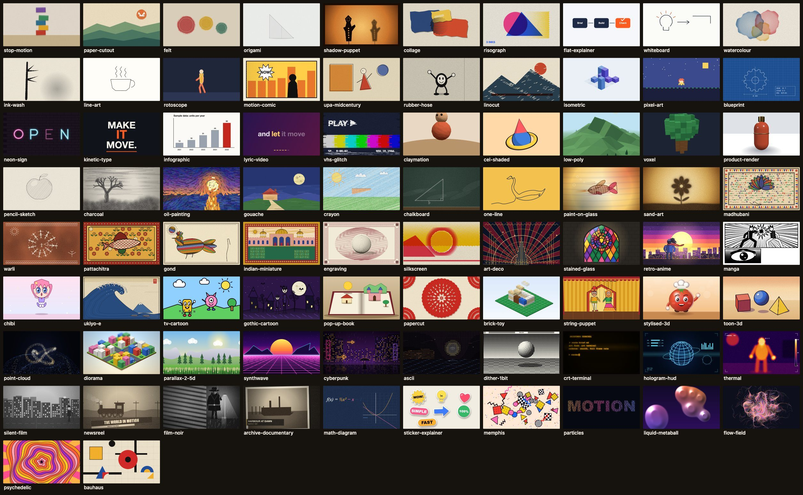
One frame from each of the 82 demos, drawn by the test that checks them.
Family
Art forms
Craft and handmade
Claymation, Stop-motion look, Paper cut-out, Felt and fabric craft, Origami, Shadow puppetry, Collage and mixed media, Risograph and halftone print, Pop-up book, Papercut and sanjhi (lace-cut paper), Brick toy, String puppet and kathputli
Drawn and painted
Anime and cel shading, 2D flat vector explainer, Whiteboard and doodle, Watercolour, Ink wash (sumi-e), Line art, Rotoscope look, Motion comic, UPA and mid-century modern, Rubber-hose cartoon, Linocut and woodcut print, Pencil sketch, Charcoal, Oil painting and impasto, Gouache storybook, Crayon and oil pastel, Chalkboard, One continuous line, Paint-on-glass, Sand animation, Retro anime (80s and 90s), Manga (black and white with screentone), Chibi, Modern TV cartoon, Gothic cartoon
Geometry, pixels and 3D
Isometric, Low-poly 3D, Voxel, Pixel art, 3D product render, Stylised 3D cartoon, Toon 3D (cel-shaded, comic-book), Point cloud and lidar scan, Tilt-shift miniature diorama, Parallax 2.5D
Type, data and retro
Kinetic typography, Infographic and data animation, Lyric video, VHS and glitch, Blueprint and technical drawing, Neon sign, Maths diagram, Sticker explainer, Memphis design
Folk and print traditions
Madhubani (Mithila), Warli, Pattachitra, Gond, Indian miniature (Mughal and Rajput), Engraving and banknote hatching, Silkscreen poster, Art deco, Stained glass, Ukiyo-e woodblock
Screens and cinema
Synthwave and outrun, Cyberpunk night city, ASCII art, 1-bit dither, CRT terminal, Hologram HUD, Thermal camera, Silent film, Newsreel, Film noir, Archive documentary: pan and zoom over stills
A renderer that works frame by frame asks for frame 212, then frame 213, sometimes out of order and on several workers. Three rules make any look survive that.
1. The picture is a function of time
No clock, no timers, no Math.random(). Whatever is on screen at second 4.2 must depend on the number 4.2 and nothing else. Randomness comes from a hash of the frame number or of a position, so it is the same on every run.
export function hash(a, b = 0, c = 0) { // a repeatable number in 0..1 from up to three integers
let n = (Math.imul(a | 0, 374761393) + Math.imul(b | 0, 668265263) + Math.imul(c | 0, 2147483647)) | 0;
n = Math.imul(n ^ (n >>> 13), 1274126177);
return ((n ^ (n >>> 16)) >>> 0) / 4294967295;
}
2. Handmade looks hold their drawings
Film runs at 24 frames a second, but clay, paper and hand-drawn animation are usually shot "on twos": each pose is held for two frames, so the picture changes about 12 times a second. That stepping is most of what makes them read as handmade. Quantise time before posing anything, and leave the video itself at 24 or 30.
export const frameOf = (t, fps) => Math.floor(t * fps + 1e-6); // which drawing we are on
export const held = (t, fps) => frameOf(t, fps) / fps; // time, quantised
const ts = held(t, 12); // "on twos"
// in GSAP the same idea for one tween: gsap.to(el, { x: 400, duration: 1, ease: "steps(12)" })
Clean looks are the opposite: a flat explainer, a low-poly scene, a product render and kinetic type stay smooth at the full frame rate.
3. Imperfection is seeded
Line boil, paper jitter, lamp flicker, misregistered ink and tape damage all come from one line: a small nudge keyed to the drawing number.
export const jit = (frame, i, amount) => (hash(frame, i, 7) - 0.5) * 2 * amount;
const f = frameOf(t, 12);
x += jit(f, partIndex, 1.2); // this part sits 1.2 px off, differently on each drawing, identically on each render
How the demos are checked
A test draws every look in headless Chrome at three moments. The three pictures must differ, none may be blank, and the middle one, drawn a second time after the others, must match itself pixel for pixel. A second test reads the source and fails if a clock, a timer or Math.random appears anywhere in it.
The methodbrief2mp4 art forms
Choosing a look from a brief
If the brief names a look, use it. If it does not, the subject and the mood usually point to one.
The brief is about
Try
Why
children, family, a gentle story
paper cut-out, claymation, felt
handmade textures feel warm and safe
a folk tale, a myth, heritage
shadow puppetry, linocut, ink wash
the form carries the tradition; check the iconography with a source
explaining a product or a process
flat vector explainer, isometric, whiteboard
clean shapes keep attention on the idea
numbers
infographic
the chart is the picture; every number needs a source
a song or a quote
lyric video, kinetic typography
the words are the content
a physical product
3D product render; claymation for a playful take
the object is the hero
nostalgia
VHS and glitch, pixel art, rubber-hose, UPA mid-century
the form carries the tradition; credit it, and commission artists where you can
history, memory, a documentary
archive documentary, newsreel, silent film, film noir
the medium of the period is the look
$ python3 plugin/skills/brief2mp4/scripts/art_route.py BRIEF.md
Art form: Shadow puppetry (inferred)
why: a traditional story: the form carries the tradition ("ramayana")
cadence: steps 12 times a second
usual tool: HyperFrames (canvas or SVG)
note: Use Blender for real light through translucent coloured leather.
or: Linocut and woodcut print, Ink wash (sumi-e)
read: references/art-forms/shadow-puppet.md
The router is a keyword scorer, not a judge. One stray word is never enough ("paper" in "paper plane" does not choose paper cut-out), and when nothing fits it says so. An art form sets the look and the timing; the kind of video (explainer, Short, launch) still sets the beats.
Writing the look into the brief
A look becomes checkable when the brief says what should be visible. Two lines are enough:
Look: paper cut-out. Flat layers with a small shadow under each, edges that look cut by hand, paper grain.
Done when: at 4.0 s the frame shows at least three paper layers with shadows; the bird's wings
change at most 12 times a second; nothing moves between drawings.
Assets
Most looks here need no pictures at all: shapes, textures and grain are drawn in code. Where a look needs photographs, footage, a character model or music, use only what you own or may reuse. If you have an image model, it can generate textures and cut-out parts; say in the report that they were generated.
Craft and handmadebrief2mp4 art forms
Craft and handmade
Looks that show the hand: real materials, held drawings, small errors.
Craft and handmade · 12 changes a second · Three.js inside HyperFrames
Claymation
Figures of clay or plasticine, posed and photographed one frame at a time. Soft, lumpy, a little uneven, and never perfectly smooth in motion. Plasticine dates from 1897. Art Clokey (Gumby) and Aardman, founded in 1972, made the look famous.
Timing
Shot on doubles: about 12 pose changes a second inside a 24 frames-a-second film. Each held pose sits a hair differently from the last.
Assets
Geometry in code (spheres, capsules, lathes) for simple characters. Fingerprint or noise detail as a generated bump texture. A real character needs modelling.
Sound
Close foley on pose changes (soft thuds, squelches), light percussion. Practice note.
What makes it read as this
Rounded volumes with small lumps and dents, never a perfect sphere
Matte, high-roughness surfaces under soft light
Saturated colour, few of them
Small asymmetries; a silhouette that changes slightly between poses
A miniature set: a floor, a backdrop, shallow depth
What makes it look wrong
Smooth 24 or 30 frames-a-second motion: it reads as CG, not clay
Glossy plastic highlights
Perfect symmetry and clean edges
How to build it
Three.js: MeshStandardMaterial with roughness about 0.9, metalness 0, and a noise canvas as bumpMap
Push each vertex in or out by a few percent with a seeded hash, then computeVertexNormals()
Pose from stepped time: held(t, 12)
Add a seeded nudge per drawing to position and rotation (about 2% of the size)
A hemisphere light plus one soft key; no hard specular highlights
Use Blender when the clay needs real subsurface scattering, soft area-light shadows or sculpted detail.
Craft and handmade · 12 changes a second · HyperFrames (canvas or DOM) or Three.js
Stop-motion look
Any real object moved and photographed a pose at a time. On screen it shows as stepped motion, tiny position errors and light that flickers a little. As old as film: stop tricks appear in the 1890s. Pixilation, cut-out and puppet animation are all forms of it.
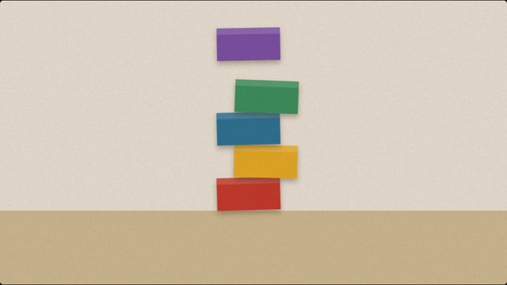
Timing
On twos (12 changes a second) is the usual cadence; action sometimes on ones, held moments on threes or more.
Assets
None needed. Everything is procedural.
Sound
Foley that lands on pose changes. A bed that is not too smooth. Practice note.
What makes it read as this
Real materials: wood, card, cloth, plastic
Position jitter of a pixel or two between drawings
Lighting that varies slightly frame to frame
Hard cuts between poses, no in-between blur
What makes it look wrong
Stepping the camera and background together, so everything strobes
Easing between held poses, which defeats the look
Jitter so large the object vibrates
How to build it
Quantise time before anything else: const ts = held(t, 12)
GSAP: ease: "steps(12)" on a one-second tween does the same for a tween
Jitter and flicker keyed to the frame number: jit(frameOf(t, 12), i, 1.2)
Keep the camera and background steady: step the subject, not the world
Craft and handmadebrief2mp4 art forms
Craft and handmade · 12 changes a second · HyperFrames (canvas, SVG or DOM)
Paper cut-out
Flat shapes cut from paper or card, layered, and moved a pose at a time. Parts hinge at joints; nothing bends. Lotte Reiniger's The Adventures of Prince Achmed (1926) is the oldest surviving animated feature. Terry Gilliam's Monty Python animations and the South Park pilot used cut paper.
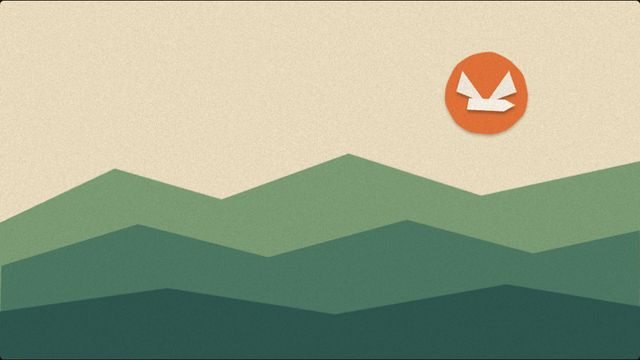
Timing
Stop-motion cadence, usually on twos. Motion is rotation about joints and sliding, with pops and holds.
Assets
Shapes drawn in code or as SVG. Photo cut-outs need images you own, or generated ones.
Sound
Paper rustle, snips, soft ticks on pose changes. Practice note.
What makes it read as this
Flat fills with hard, slightly uneven cut edges
Layers stacked with a small, tight shadow under each
Rigid parts that rotate about a pivot
Paper grain over everything
A limited, slightly muted palette
What makes it look wrong
Smooth vector motion with no stepping
Perfect edges
Large soft shadows, which look like interface cards, not paper
How to build it
Each part is its own shape; nudge the corners with a seeded hash so edges look cut by hand
Canvas: shadowOffsetY 3 to 4 px with shadowBlur 4 to 5 px per layer. DOM: filter: drop-shadow()
Joints: rotate about a pivot (transformOrigin in GSAP, translate then rotate on a canvas)
Paper grain: a noise texture drawn once and laid over with multiply
SVG route: feTurbulence into feDisplacementMap (scale 2 to 4) roughens an edge
Use Blender for real folded paper with thickness and light passing through it.
Craft and handmade · 12 changes a second · HyperFrames (canvas or SVG)
Felt and fabric craft
Shapes that look needle-felted or sewn: a fuzzy edge of loose fibres, a matte mottled surface, visible stitches. Needle felting tangles wool fibres with barbed needles to make flat pictures and soft figures.
Sourcing note: The craft is well documented; its use in animation is a practice note, not sourced.
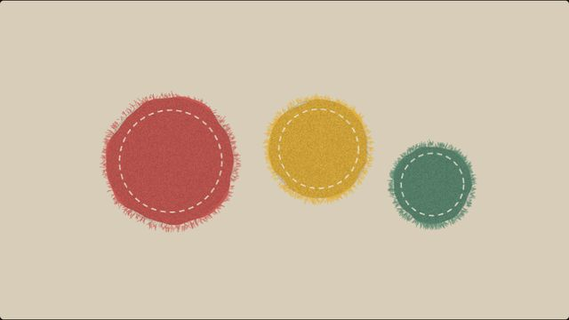
Timing
Stop-motion cadence, on twos. Gentle bobbing and nudging.
Assets
Procedural. A felt texture from an image model helps for close-ups.
Sound
Soft, warm, acoustic. Practice note.
What makes it read as this
A halo of short fibres along every edge
Matte, slightly mottled colour
Stitches: a dashed line just inside the edge
Chunky, simple forms in wool colours
What makes it look wrong
Crisp vector edges
Flat plastic colour
No fibre fuzz
How to build it
Draw the shape, then several hundred short strokes outward from its edge, each angled by a seeded hash
Stitches: setLineDash([9, 7]) on a path just inside the edge (SVG: stroke-dasharray)
Mottle: a grain texture clipped to the shape with multiply
SVG route: high-frequency feTurbulence (0.8 to 1.2) with displacement scale 3 to 6 on the edge
Use Blender hair or fur for real fibre fuzz on 3D figures.
Craft and handmadebrief2mp4 art forms
Craft and handmade · smooth · HyperFrames (canvas or SVG), or Three.js
Origami
Paper folded from a flat sheet: sharp creases, flat facets, each fold a clean move followed by a pause. Japanese paper folding. Modern computational origami works from crease patterns.
Timing
Folds are eased moves of about 0.8 seconds with a short hold after each. Smooth, not stepped.
Assets
Geometry in code. A faint paper grain.
Sound
Light paper crinkle on each fold, soft piano or music box. Practice note.
What makes it read as this
Sharp mountain and valley creases
Flat facets, each shaded as one plane
Paper coloured on one side, white on the other
Soft, even light so the creases read
What makes it look wrong
Faces passing through each other
Folding with no hold, so the eye cannot follow
Light that hides the creases
How to build it
2D: a fold is a point travelling across the crease; draw the moving flap from the crease to that point
Shade the flap by its angle, and swap to the paper's other colour past 90 degrees
3D: flat-shaded polygons, child groups rotating about the crease axis
An orthographic camera gives a diagram-clean view
Use Blender when the paper has to bend or show thickness.
Craft and handmade · 12 changes a second · HyperFrames (canvas or SVG)
Shadow puppetry
Flat figures held between a lamp and a cloth screen: dark silhouettes with punched patterns on a warm, glowing field. An old tradition across Asia. Ravana Chhaya of Odisha uses uncoloured deerskin puppets with no joints; wayang kulit of Java and Bali was recognised by UNESCO in 2003. Lotte Reiniger brought silhouettes to film.
Timing
Live puppets move continuously on rods; film versions are stop-motion, so use twos. Stiff, deliberate moves; no squash and stretch.
Assets
Simple figures in code. Ornate traditional figures need drawing or tracing with care.
Sound
Narrator, singers and percussion in the tradition: cymbals and drums for Ravana Chhaya, gamelan for wayang.
What makes it read as this
Black silhouettes on a warm lit screen, never on white
Interior detail made of perforations: rows of holes and cut patterns
A lamp that flickers
The shadow softens and grows as the puppet moves away from the screen
Rods visible below the figures
What makes it look wrong
Black on white, which loses the lamp
Smooth modern vector motion
Careless drawings of sacred figures: check the iconography with a source
How to build it
One path per puppet filled with the even-odd rule, so holes are part of the figure
Screen: a radial gradient from warm yellow to deep brown
Flicker: scale the lamp brightness by a seeded value per drawing
Distance from the screen: filter: blur() growing with distance, and lower opacity
Ravana Chhaya style: no joints, move and tilt the whole puppet. Wayang style: hinge the arms
Use Blender for real light through translucent coloured leather.
Craft and handmadebrief2mp4 art forms
Craft and handmade · 8 changes a second · HyperFrames (canvas or DOM)
Collage and mixed media
Pieces of different papers, photographs and print stuck together: mismatched scale and texture, torn edges, hard shadows. From the French coller, to glue. Braque and Picasso brought it into modern art around 1912; Dada followed with photomontage.
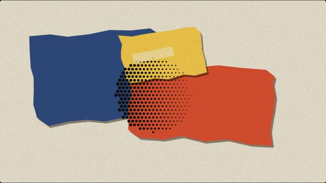
Timing
On twos or threes. Pieces pop into place on the beat with a small rotation, then hold.
Assets
Paper textures in code. Photo fragments need images you own, or generated ones.
Sound
Bright percussive music, staccato effects on each pop. Practice note.
Torn edge: walk the outline of a rectangle and nudge every point with a seeded hash
Hard shadow: shadowBlur: 0 with an offset of 5 to 6 px
Halftone a photo: dots on a staggered grid sized by brightness
Entrance: scale from 1.25 to 1 with a quarter-turn of rotation over a quarter of a second
Craft and handmade · 8 changes a second · HyperFrames (canvas or DOM)
Risograph and halftone print
The look of a cheap stencil print: two to four bright inks laid over each other, visible grain, dot screens, and layers that never quite line up. The Risograph duplicator dates from 1980: one ink per drum, so each colour is a separate pass. Halftone dots go back to the 1860s.
Timing
Print is still. Animate by re-rolling the misregistration and swapping the grain 8 to 12 times a second.
Assets
All procedural. A chunky sans or slab typeface.
Sound
Lo-fi, tape hiss. Practice note.
What makes it read as this
Two to four spot colours, often pink, blue and yellow
Inks overprint to make new colours (multiply)
Each layer sits a pixel or two off register
Grain and dot screens; no smooth gradients
Off-white paper
What makes it look wrong
Gradients
Perfect registration
More than four colours
How to build it
Each ink is its own layer drawn with mix-blend-mode: multiply (canvas: globalCompositeOperation)
Offset each layer by a seeded amount per drawing: jit(frameOf(t, 8), layer, 3)
Tone as dots: a staggered grid of circles whose radius follows the tone
Grain: several pre-made noise tiles, cycled by frame number
Three.js HalftonePass exists for 3D scenes; SVG feColorMatrix separates a photo into one ink
Craft and handmadebrief2mp4 art forms
Craft and handmade · smooth · HyperFrames (canvas), Blender for real folded paper
Pop-up book
An open book seen at an angle: the pages swing open and layered card pieces stand up off them, each with a fold shadow, a visible card edge and a shadow on the page. A pop-up book is any book with three-dimensional pages, often with elements that pop up as a page is turned; designing them is sometimes called paper engineering. The first known movable in a book was made by the Benedictine monk Matthew Paris, whose Chronica Majora, covering a period beginning in 1240, had volvelles attached to some pages.
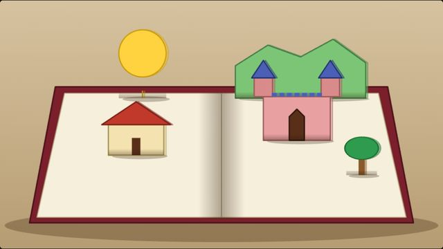
Timing
The right page swings open over about 1.2 seconds, then each piece pops up in turn with a slight overshoot. Smooth motion.
Assets
All in code. For a real pop-up, build it in Blender with folded geometry.
Sound
A page turn, a paper pop and a music-box bed. Practice note.
What makes it read as this
A book at an angle with a spine shadow and a cover edge
Card pieces that stand up from the pages in layers, near and far
A thin offset edge and a fold shadow where each piece meets the page
A shadow on the page under each piece
Bright, flat, paper-craft colours
What makes it look wrong
Pieces that float: each needs a base on the page and a shadow
No overshoot on the pop
A flat book with no angle
How to build it
Map page space to the screen with a perspective-like function: width narrows toward the back, and cos(pi (1 - open)) swings the right page
Each piece: a draw function in its own local coordinates, scaled vertically by an overshooting k
Draw the piece twice: a dark copy offset sideways as the card edge, then the front
A small ellipse shadow and a gradient fold shadow at the base
Sort pieces back to front
Craft and handmade · 8 changes a second · HyperFrames (canvas or SVG)
Papercut and sanjhi (lace-cut paper)
One colour of cut paper on a plain ground: a scalloped medallion and corner pieces full of symmetrical cut-outs, with a soft shadow that shows the paper is a layer above the page. It is a living tradition with working artists; the demo here is a code study of its visual rules, not the craft itself. Papercutting is the art of making designs cut from a single sheet of paper, which has developed in many cultures; the oldest surviving paper cutout, a symmetrical circle from the 6th century, was found in Xinjiang, China. Japanese paper cutting is called kirigami.
Sourcing note: The sources do not cover sanjhi, the Indian stencil papercutting tradition: it is named here only as an alias. Add a primary or museum source for it before a film makes claims about it.
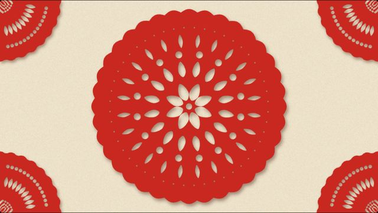
Timing
The rings open one after another over about 3 seconds, and the paper trembles a fraction of a degree. The picture steps about 8 times a second.
Assets
All in code. A scanned sheet of cream paper helps if the user has one.
Sound
A scissors snip as each ring opens, a soft drone. Practice note.
What makes it read as this
One paper colour only: red on cream, or white on a dark ground
Symmetry: radial for a medallion, mirrored for corners
Cut-outs in rings: leaves, drops, round holes, fine dots
A scalloped or pointed edge and thin bridges between the holes
A slight drop shadow and a trace of sway
What makes it look wrong
Two or more colours: that is collage, not a single sheet
Holes with no bridges, which would fall apart
Presenting a machine-made picture as authentic sanjhi work
How to build it
One Path2D: the outline plus every hole as a subpath, filled with the even-odd rule (holesPath() in looks-toon.js)
Rings of holes by laceRing(): leaf, drop and dot shapes at equal angles, scaled up from nothing to open them
Shadow: shadowBlur, shadowOffsetX and shadowOffsetY on the fill
Mirror a corner piece four ways with ctx.scale(+-1, +-1)
Craft and handmadebrief2mp4 art forms
Craft and handmade · 12 changes a second · HyperFrames (canvas), Blender for glossy plastic
Brick toy
Everything built from studded plastic bricks on a green baseplate: visible studs, a glossy edge, flat bright colours, and bricks that drop in one at a time on twos. Brick toys are a kind of construction set: a standardised assortment of pieces for building models, most often marketed as toys.
Sourcing note: The source describes construction sets in general. Brand names appear only in the router keywords, so that the router understands a request; they are never used in a name, a rule or a picture.
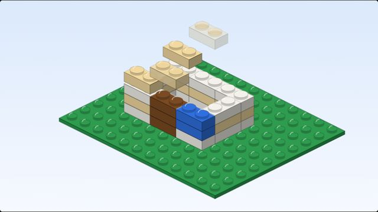
Timing
Bricks drop in one at a time over about 4 seconds, each falling about six layers and settling. Drawn on twos, 12 changes a second.
Assets
All in code. No logos, no brand names, no printed lettering on the studs.
Sound
Click and clack of plastic, a cheerful ukulele bed. Practice note.
What makes it read as this
Every object is made of rectangular bricks on a stud grid
A baseplate with a stud on every cell
Flat, bright primary colours with a lighter top and darker sides
A bright edge and a glossy highlight on the studs
Models built layer by layer, brick by brick
What makes it look wrong
Smooth sloped surfaces: only bricks and plates
No studs
Any brand name or logo
How to build it
An isometric projection: sx = cx + (x - y) * cw, sy = cy + (x + y) * ch - z * bh (iso() in looks-toon.js)
Each brick: a top and two sides in three shades of one colour, then a stud on each cell (brick(), stud())
Sort bricks by x + y then by height so that nearer bricks cover farther ones
Drop each brick with easeOut from above and fade it in
Craft and handmade · 8 changes a second · HyperFrames (canvas or SVG)
String puppet and kathputli
Marionettes in bright Rajasthani dress: big painted wooden heads, turbans and ghagras, strings to a control bar at the top, jerky dangling motion, in a small theatre with red curtains and a gold valance. It is a living tradition with working artists; the demo here is a code study of its visual rules, not the craft itself. Kathputli is a string puppet theatre native to Rajasthan, India, and the most popular form of Indian puppetry; the name means a wooden doll, and the puppets are made of wood, cotton cloth and metal wire. A marionette, or string puppet, is controlled from above using wires or strings and a controller; puppetry is recorded in Ancient Greece in the 5th century BC.
Sourcing note: Wikipedia describes the Kathputli as worked by a single string over the puppeteer; the demo uses a Western-style control bar, with strings to the head, hands and feet, so that the strings are easy to read. Check a real rig before a film shows one.
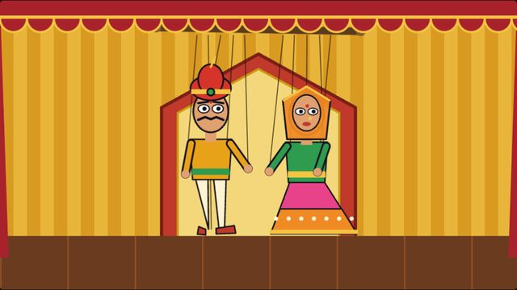
Timing
The limbs swing on twos, about 8 changes a second, each with its own phase, and the bar tilts slowly.
Assets
All in code.
Sound
Dholak and harmonium, folk song, the wooden clack of puppets. Practice note.
What makes it read as this
A large, painted head with big eyes, strong brows and a moustache for the king, a veil and nose ring for the dancer
Bright costume: red turban and yellow tunic, a pink and orange gathered skirt with gold trim
Strings run straight from a bar at the top to the head, hands and feet
Jerky, swinging limbs, as if on strings, with the whole puppet swaying
A small stage with red curtains, a gold valance and a plank floor
What makes it look wrong
Smooth, floaty limbs: marionettes swing and stop
Strings that do not reach the limbs
Presenting a machine-made picture as an authentic kathputli show
How to build it
Compute each hand and foot from a swinging angle (puppet() in looks-toon.js), then draw the strings from the bar anchors to those points first
Body parts as polygons and strokes in local coordinates, with an outline
Stage: stripes, an arch, two curtain drapes with gold fringe and a scalloped valance
Use stepped time held(t, 8) so the motion is jerky
Drawn and paintedbrief2mp4 art forms
Drawn and painted
Looks made of line and paint, from cel animation to ink on paper.
Drawn and painted · 12 changes a second · Three.js inside HyperFrames
Anime and cel shading
Light broken into two or three flat tones with a hard edge between them, and an ink outline around every form. Named after the celluloid sheets of hand-drawn animation. In 3D it became toon shading, as in Jet Set Radio and The Wind Waker.
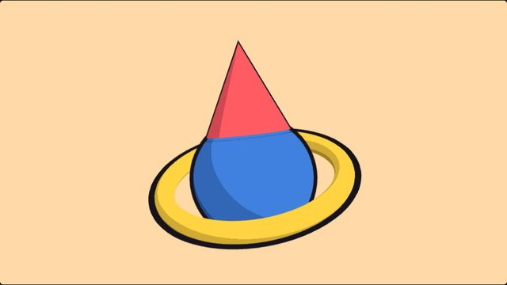
Timing
On twos as the baseline, ones for key action, threes and holds for dialogue.
Assets
The gradient map is three bytes. Characters need modelling or generated models.
Sound
Whoosh and impact effects on key poses. Practice note.
Three.js MeshToonMaterial with a gradientMap: a three-texel DataTexture with NearestFilter, so light snaps to bands
Outline by inverted hull: a second copy of each mesh, slightly larger, drawn back faces only in black
OutlineEffect and SobelOperatorShader in the three.js examples are the two other routes
Step the pose time: held(t, 12)
2D: flat SVG shapes, a thick outline, steps() timing
Use Blender for Freestyle line art and shader-to-RGB ramps on real characters.
Drawn and painted · smooth · HyperFrames (DOM, SVG)
2D flat vector explainer
The plain explainer look: flat fills, a few colours, simple shapes and icons, smooth eased motion. Flat design comes from Swiss style and modernism; in animation its ancestor is the stylised, limited look of the UPA studio.
Timing
Smooth ease-out moves of 0.4 to 0.8 seconds, staggered, with holds long enough to read.
Assets
All in code.
Sound
Soft interface blips, a light bed, voice-led pacing. Practice note.
What makes it read as this
Flat fills, three to five colours, one accent
Geometric shapes with one stroke width
Plenty of space; one idea per frame
Clean sans type
What makes it look wrong
A grid of identical cards
Gradients and shadows creeping in
Too much on screen at once
How to build it
HTML or SVG with GSAP: this is what HyperFrames is best at
Stagger related items 0.15 to 0.25 seconds apart
Draw check marks and connectors on with stroke-dashoffset
Move a highlight instead of cutting
Drawn and paintedbrief2mp4 art forms
Drawn and painted · 10 changes a second · HyperFrames (canvas or SVG)
Whiteboard and doodle
Marker lines that draw themselves on a white board, in the order someone would draw them: simple diagrams and a few handwritten words, one accent colour. Also called video scribing. A 2016 study found little evidence that it teaches better than other formats, so use it for its tone, not as a learning trick.
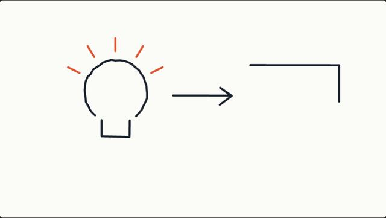
Timing
Each element draws on over 0.3 to 1.5 seconds, paced to the narration. The line boils at about 10 changes a second.
Assets
All in code. A marker or chalk typeface if the system has one.
Sound
Marker squeak, voice-led. Practice note.
What makes it read as this
Black marker lines with a slight wobble
Strokes appear in drawing order
One or two accent colours
A few handwritten words in one marker face, never paragraphs
What makes it look wrong
Perfect vector lines
A hand that covers the drawing
Paragraphs of text
How to build it
Draw-on: a polyline drawn up to a fraction of its length (SVG: stroke-dashoffset)
Boil: nudge every point by a seeded amount keyed to frameOf(t, 10)
rough.js (MIT) generates sketchy shapes and hatching to animate afterwards
Drawn and painted · 12 changes a second · HyperFrames (canvas or SVG)
Watercolour
Transparent washes on textured paper: colour that spreads, pools darker at its edge, and lets the paper show through. Pigment in water on paper. Wet-on-wet blends softly; wet-on-dry gives crisp edges.
Sourcing note: The edge-darkening rule is a practice note; the technique sources cover the filter, not the look.
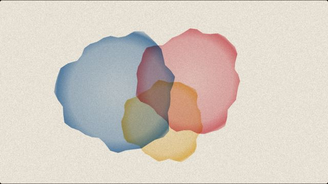
Timing
Slow. A wash grows over 1 to 3 seconds with an ease-out. Hold drawings at 12 a second for a hand-painted feel.
Assets
Procedural. A scanned paper texture improves close-ups.
Sound
Slow, gentle, acoustic. Practice note.
What makes it read as this
Transparent colour; overlaps make new colours
Darker pigment at the edge of each wash
Irregular, soft outlines
Paper grain visible everywhere
Unpainted paper as the highlight
What makes it look wrong
Opaque flat colour
A uniform blur, which looks out of focus, not painted
No paper texture
How to build it
Each wash: an irregular closed outline, clipped, filled with a radial gradient that is darkest near the rim
Layer washes with multiply
Paper grain over everything with multiply
SVG route: low-frequency feTurbulence (0.01 to 0.03) into feDisplacementMap (scale 10 to 25) for bleeding edges
3D: a Kuwahara filter as a custom pass gives a painterly result; three.js ships none
Drawn and paintedbrief2mp4 art forms
Drawn and painted · 12 changes a second · HyperFrames (canvas or SVG)
Ink wash (sumi-e)
Black ink in every shade from deep black to pale grey, laid down in tapered brush strokes on rice paper, with a great deal left empty. Chinese ink wash painting from the Tang dynasty, carried to Japan by Zen monks. Shanghai Animation Film Studio made ink-wash films from 1960.
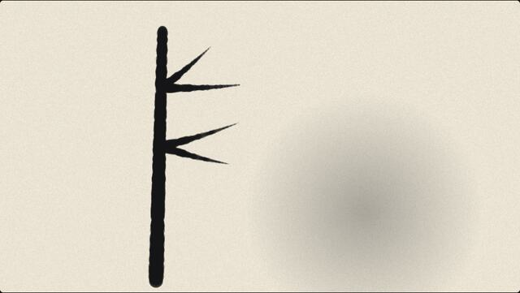
Timing
Slow and fluid. A stroke accelerates and lifts. On twos.
Assets
Procedural. Rice-paper grain.
Sound
Sparse: flute, single plucked notes, silence. Practice note.
What makes it read as this
One ink, many dilutions
Strokes that taper from thick to a point
Empty paper as part of the picture
One small red seal
Soft grey washes behind sharp strokes
What makes it look wrong
Pure black on pure white
Uniform stroke width
Filling the frame
How to build it
A stroke is a row of overlapping dots whose radius tapers along its length, drawn up to a fraction
Vary each dot's opacity with a seeded hash for a dry-brush break
Washes: soft radial gradients with multiply
SVG route: variable-width filled paths revealed by a mask
Drawn and painted · 10 changes a second · HyperFrames (SVG or canvas)
Line art
One weight of line on a plain ground, no shading: the drawing draws itself, then quivers slightly as if redrawn each frame. Drawing with line alone, where tone comes only from hatching or stippling.
Timing
Draw-on over 1 to 2 seconds, then a boil at 8 to 12 changes a second.
Assets
All in code.
Sound
A pencil or pen sound under the draw-on. Practice note.
What makes it read as this
A constant or tapered stroke with round ends
No fills, or one flat tone
Plenty of empty space
One accent colour at most
What makes it look wrong
Jitter so strong the line turns to noise
Filters that re-run on a large area every frame and slow the render
How to build it
Draw-on with stroke-dashoffset (canvas: a polyline to a fraction of its length)
Boil: a seeded nudge of 1 to 2 px per point, keyed to the frame number
SVG route: feTurbulence with seed set from the frame number, into feDisplacementMap (scale 1.5 to 3)
vector-effect: non-scaling-stroke keeps the weight when scaled
Drawn and paintedbrief2mp4 art forms
Drawn and painted · 12 changes a second · HyperFrames (canvas over video)
Rotoscope look
Real movement traced by hand: lifelike motion, flat colour fields that drift, and an outline that shimmers. Max Fleischer built the rotoscope. A Scanner Darkly, Waking Life and the a-ha video for Take On Me are the well-known examples.
Timing
Every frame or on twos. The boil is keyed to the drawing.
Assets
Footage you own, or a figure built in code.
Sound
The original scene audio, or music-led. Practice note.
What makes it read as this
Motion with the timing of live action
Flat or posterised colour fields
Outlines that change slightly every drawing
Colour that sits a little off the line
What makes it look wrong
Edge noise that flickers out of control
Losing the subject in the treatment
Tracing footage you have no right to use
How to build it
From footage: draw each video frame to a canvas, posterise it, find edges (three.js has SobelOperatorShader), then nudge the edges per drawing
From code: a figure built from joints, drawn twice: thick flat colour offset by a seeded amount, then a thin outline with its own nudge
Re-encode source video with a keyframe on every frame so seeking is exact
Dedicated tools do true painterly rotoscoping better than a browser.
Drawn and painted · smooth · HyperFrames (DOM or canvas)
Motion comic
Comic panels brought to life: layers inside a panel slide at different speeds under a slow camera move, then a hard cut to the next panel. Watchmen: Motion Comic (2008) is the usual first example.
Sourcing note: Pan-and-zoom staging is a practice note; the source describes the format, not the technique.
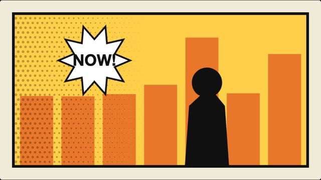
Timing
Slow pushes and pans of 2 to 4 seconds, hard cuts between panels, a pop for a burst.
Assets
Drawn panels in layers. Artwork needs an illustrator or generated images cut into layers.
Sound
Voice, music and effects carry it. Practice note.
What makes it read as this
Ink outlines, flat colour, halftone shading
A panel border
Foreground, figure and background on separate layers
Bursts and lettering as graphic elements
What makes it look wrong
A slow zoom on one flat image, which reads as a slideshow
No separation between figure and background
How to build it
Layers in a clipped panel; move far layers less than near ones
A slow scale from 1 to about 1.07 on the whole panel
Halftone shading: dots that shrink across the tone
Cut to the next panel by switching the scene at a time, not by cross-fading
Drawn and paintedbrief2mp4 art forms
Drawn and painted · 8 changes a second · HyperFrames (canvas, SVG)
UPA and mid-century modern
Flat, stylised design from 1950s cartoons: geometric characters, abstract backgrounds, colour printed slightly off its outline, and very few drawings. United Productions of America turned away from Disney realism and made limited animation a style. Gerald McBoing-Boing won an Academy Award in 1950.
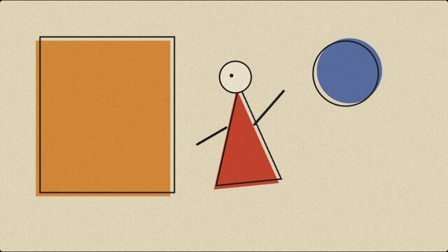
Timing
Limited animation: a pose is held, then pops to the next. Eight or fewer changes a second.
Assets
All in code.
Sound
Jazz combo, sound effects as music. Practice note.
What makes it read as this
Characters built from triangles, circles and lines
Flat colour blocks that do not meet their outlines
Abstract backgrounds: a few shapes, no perspective
A warm, muted palette
What makes it look wrong
Smooth, fluid motion
Gradients and realistic light
How to build it
Flat shapes; draw the outline 6 to 9 px away from the fill
Two or three poses, switched on a frame count with no in-betweens
Paper grain with multiply
Drawn and painted · 12 changes a second · HyperFrames (canvas, SVG)
Rubber-hose cartoon
The 1920s cartoon: limbs like hoses with no elbows or knees, round bodies that bounce to the music, black and white film. Credited to Bill Nolan on Felix the Cat. The Fleischer studio kept it longest; Cuphead revived it.
Timing
Bouncy loops locked to the music, on twos, with squash and stretch.
Assets
All in code. Original characters only.
Sound
Hot jazz, slide whistles, effects on every bounce. Practice note.
What makes it read as this
Curved tubular limbs
Round forms
Black and white or sepia, high contrast
Film grain, scratches and a frame that weaves slightly
Everything moves to the beat
What makes it look wrong
Stiff jointed limbs
Clean modern gradients
Copying characters that are still under copyright
How to build it
A limb is a quadratic curve between two points; move the control point to bend it
Squash and stretch: scale the body on one axis by the inverse of the other
Grain: cycle a few noise tiles by frame; gate weave: shift the whole picture by a seeded pixel or two
Sepia with feColorMatrix if wanted
Drawn and paintedbrief2mp4 art forms
Drawn and painted · 8 changes a second · HyperFrames (canvas, SVG)
Linocut and woodcut print
A relief print: bold flat shapes in one to three inks, with white gouge marks where the block was carved. Carved in linoleum or wood; the uncut surface prints. Each colour is a separate block.
Sourcing note: The source covers the technique; the visual rules are practice notes.
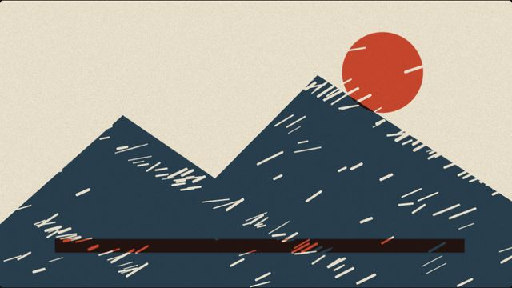
Timing
Each colour arrives as a pull, top to bottom, then holds. On twos or slower.
Assets
All in code.
Sound
A roller, a press, paper lifting. Practice note.
What makes it read as this
Bold shapes, no fine detail
Short white cut marks inside the ink, all leaning one way
One to three inks, laid slightly off register
Paper showing at the edges
What makes it look wrong
Gradients
Thin delicate lines
Too many colours
How to build it
Draw each block to its own canvas, then cut marks out of it: short strokes with destination-out
Print blocks over each other with multiply, the second one offset a few pixels
Reveal a block by widening a clip from the top
SVG route: feTurbulence through a hard threshold makes rough voids
Drawn and painted · 8 changes a second · HyperFrames (canvas or SVG)
Pencil sketch
Graphite lines on toothed paper: thin hatching that builds tone, a doubled and searching outline, and a thumb-smudged shadow. It looks drawn by hand because no two lines are quite the same. Pencil marks are made by abrasion, a trail of graphite left on the paper. A large, very pure graphite deposit was found at Borrowdale in Cumbria, England, in 1565 (some sources say as early as 1500). Hatching, tone from closely spaced parallel lines, originated in the Middle Ages and developed into cross-hatching, notably in fifteenth-century prints.
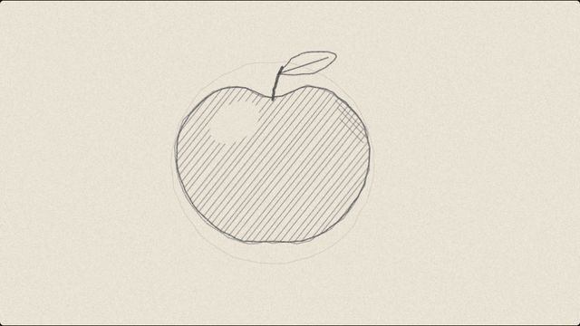
Timing
Lines appear in drawing order over about 3 seconds: construction line, outline, then each hatching layer, then the smudge. The picture steps about 8 times a second and each step re-seeds the wobble, like a stop-motion sketch.
Assets
All in code. A scanned sheet of cartridge paper makes a better ground if the user has one.
Sound
A pencil scratch under each hatching pass, quiet room tone. Practice note.
What makes it read as this
Thin grey lines with a slight wobble, and an outline drawn twice, a little differently each time
Tone comes only from line density: one set of hatching for light, a second set across it for shadow
A faint construction shape under the outline, as a sketcher would lay in first
A smudge where a thumb rubbed the shadow
Paper grain that breaks every line into specks
What makes it look wrong
Hard black vector lines with no wobble
Perfectly even hatching that never re-seeds, which looks ruled by a machine
Shadow as a smooth gradient instead of lines
How to build it
Outline twice: two polylines with different seeded nudges of 1 to 2 px, keyed to frameOf(t, 8), at different opacity
Hatching: parallel lines clipped to the shape with ctx.clip(path); later layers use an even-odd clip so that they land only on the shadow side
Reveal each line from a fraction k of its length so the hatching sweeps on in order
Smudge: a radial gradient squashed to an ellipse and drawn with multiply
Tooth: specks in the paper colour drawn over the lines (tooth() in looks-painted.js)
Drawn and paintedbrief2mp4 art forms
Drawn and painted · 8 changes a second · HyperFrames (canvas)
Charcoal
Soft black dust smeared and rubbed on rough paper: dark masses with crumbling edges, greys made by rubbing, and highlights lifted out with an eraser. Charcoal was often a component of cave painting, with examples at least 28,000 years old. Artists use vine charcoal (wood burned in a kiln without air) or compressed charcoal held by a gum or wax binder; its marks are much less permanent than graphite, so lines are easily erased and blended.
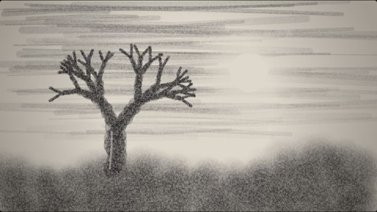
Timing
Marks are laid in order over about 3 seconds: broad rubbed sky first, then the dark mass, then the line work, then the lifted highlights. The picture steps about 8 times a second.
Assets
All in code. A scan of grey sketching paper helps if the user has one.
Sound
Dry scratching and a soft smudging rub, room tone. Practice note.
What makes it read as this
Soft, uneven dark masses; never a clean line or a hard outline
Edges crumble into specks and the paper grain shows through the black
Greys come from rubbing, not from a colour
Highlights are pale marks lifted out of the dark with an eraser: a sun, a glint on a trunk
One warm paper grey and black, nothing else
What makes it look wrong
Smooth airbrushed gradients with no grain
Crisp vector outlines on the tree or the figure
Pure black on pure white: charcoal lives on a warm grey ground
How to build it
Dabs: many overlapping low-opacity circles along a line, each with a seeded size and offset (dabs() in looks-painted.js); large dabs use a radial gradient so they stay soft
Rubbed sky: long, uneven strokes of varying width at low opacity
Eraser: paint pale strokes and a soft disc in the paper colour over the dark
Finish with coarse specks in the paper colour (tooth() with scale 2) and a dark vignette
Drawn and painted · 12 changes a second · HyperFrames (canvas)
Oil painting and impasto
Thick oil paint laid in visible, directional brush strokes: colour mixed on the canvas, strokes that follow the shape of the thing, and raised light ridges where the paint is heaped up. Oil painting binds pigment in a drying oil. The oldest known oil paintings are 7th-century Buddhist works in Afghanistan, and by the height of the Renaissance oil had almost replaced egg tempera for panel painting in most of Europe. Impasto is paint laid on thickly enough that brush or painting-knife strokes show.
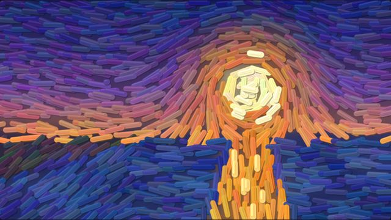
Timing
A first wash blocks the colour in, then strokes cover the canvas over about 3 seconds, the brightest daubs last. The picture steps about 12 times a second, like a timelapse of a painter.
Assets
All in code. Three.js can use a normal map from the stroke ridges for a real impasto light, but the 2D version reads well.
Sound
Brush on canvas, a slow room tone, a calm piano or strings bed. Practice note.
What makes it read as this
Visible brush strokes that follow the form: curved round a sun, straight along water
Each stroke has a light ridge on one side and a darker edge on the other, so the paint looks thick
Rich, mixed colour with small variations from stroke to stroke
Thick light daubs (impasto) on the brightest spots
A first blocked-in wash under the strokes
What makes it look wrong
Strokes all the same angle, which reads as a filter
Smooth gradients inside the strokes
No ridge highlights, which makes the paint look flat and digital
How to build it
Draw each stroke as a short thick line with round caps, three times: a dark copy offset down and right, the colour, and a thin lighter copy offset up and left (brush() in looks-painted.js)
Choose each stroke's angle from a flow field: tangent to circles round a focus, level over water
Choose colour from position with a seeded jitter per stroke so no two match
Reveal each stroke from a seeded start time so the canvas fills at random places
Drawn and paintedbrief2mp4 art forms
Drawn and painted · 8 changes a second · HyperFrames (canvas or SVG)
Gouache storybook
Flat, matte, opaque layers of paint with hand-cut edges and faint brush streaks: the look of a printed picture book. Each colour is laid over the last, with no gradients and no transparency. Gouache is an opaque water-medium paint of pigment, water and a binder such as gum arabic, with a high ratio of pigment to binder. It has been used for at least twelve centuries, dries to a matte finish, and is used by commercial artists for posters, illustrations and comics.
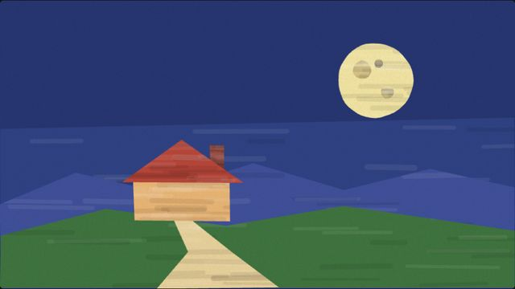
Timing
Layers go on one after another, each over about half a second: back to front over about 3 seconds, with small things such as stars and smoke last. The picture steps about 8 times a second.
Assets
All in code. Real gouache scans make a stronger texture if the user owns them.
Sound
Soft acoustic guitar or a music box, a wooden or paper foley on each layer. A storybook narration suits it. Practice note.
What makes it read as this
Flat, fully opaque shapes in a small palette
Matte finish: no gloss and no shading gradients
Hand-cut edges, slightly uneven, never a perfect curve
Faint horizontal brush streaks inside each shape
Back to front: sky, far hills, near hills, then the subject, then small bright details
What makes it look wrong
Gradients or soft shadows, which turn it into a digital illustration
Black outlines round every shape: gouache is edge to edge colour
Too many colours: a storybook palette is five or six
How to build it
One filled path per colour, built with cut() (corners nudged by a seed) or blob()
Clip to the path and draw 20 to 30 faint light and dark streaks across it (flatShape() in looks-painted.js)
Reveal each layer with a clip that grows: up from the bottom for ground, across for objects
Add paper tooth last at low strength
Glow from a window is two or three flat circles of falling opacity, not a gradient
Drawn and painted · 8 changes a second · HyperFrames (canvas)
Crayon and oil pastel
Waxy, broken strokes of bright colour on toothed paper, scribbled in one slanted direction with fat outlines pushed past the edges. It looks like a child's drawing with real pressure in it. A crayon is a stick of pigmented wax, in the modern English-speaking world mostly paraffin. In 1924 two Japanese teachers set out to make a high-viscosity crayon, the oil pastel, which binds pigment in wax and non-drying oil, so that children could draw freely in colour.
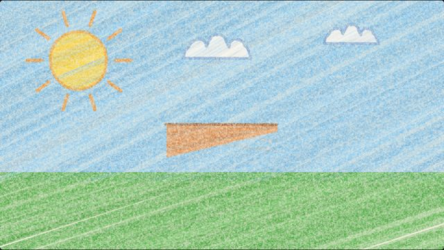
Timing
Each area is scribbled in over 0.3 to 0.9 seconds, sky and grass first, the subject after, small details last, about 4 seconds in all. The picture steps about 8 times a second.
Assets
All in code. A scan of cream sugar paper helps if the user has one.
Sound
A waxy scratching sound under each scribble, a ukulele or xylophone bed. Practice note.
What makes it read as this
Scribbled fills in one slanted direction, each pass with its own pressure
Paper tooth shows through the wax as speckles of paper colour
Fat outlines in a darker shade of the fill, pushed a little past the edge
Bright, simple, saturated colour: red roof, blue door, green grass
Simple subjects drawn the way a child would: sun with rays, house, tree
What makes it look wrong
Clean flat fills with no stroke direction
Thin precise outlines
Tooth specks so fine that they read as film noise
How to build it
Scribble: near-parallel passes inside a rotated box, each stroke its own opacity and width (scribble() in looks-painted.js), clipped to the shape
A second, lighter, dashed pass at another angle across the first
Outlines: a fat, darker stroke with a seeded wobble that is re-seeded on each step
Tooth: coarse specks in the paper colour drawn over everything (tooth() with scale 2)
Drawn and paintedbrief2mp4 art forms
Drawn and painted · 10 changes a second · HyperFrames (canvas or SVG)
Chalkboard
White and coloured chalk on a dark green-black board: dusty, broken lines that draw themselves, ghosts of old eraser swipes, and a stub of chalk at the tip of each line. A blackboard or chalkboard is a reusable surface written on with chalk (calcium sulphate or calcium carbonate). Early boards were slate; later ones are often dark matte paint, black or dark green. The first attested use of chalk on a blackboard in the United States dates to 21 September 1801.
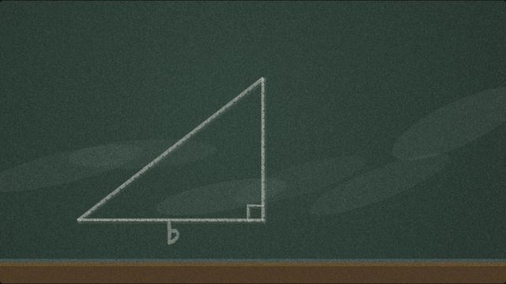
Timing
Each line draws on over 0.3 to 0.8 seconds, in the order a teacher would draw it, about 4 seconds in all. The line boils at about 10 changes a second.
Assets
All in code. A chalk typeface if the system has one; the demo falls back to a handwriting face.
Sound
Chalk squeak and tap under each line, voice-led. Practice note.
What makes it read as this
Dark green-black board with a soft lit patch and faint eraser swipes
Dusty, broken chalk lines: three thin passes and a soft halo, never a solid line
One or two chalk colours besides white
A wooden ledge with fallen dust under the board
Hand-lettered words, few and large
What makes it look wrong
A pure black board and perfect white vector lines
A hand that covers the drawing
Paragraphs of text
How to build it
Chalk: three passes of the same stroke with different dash patterns at half opacity plus a wide faint halo, each nudged by a seeded amount keyed to frameOf(t, 10) (chalk() in looks-painted.js)
A rounded stub drawn at the tip while the line is still drawing
Board: base colour, a radial light, grain, and a few big translucent ellipses for old swipes
Specks in the board colour drawn over the chalk eat holes in it
Drawn and painted · smooth · HyperFrames (SVG or canvas)
One continuous line
A whole subject drawn by one unbroken line on a flat colour: the pen never lifts, crosses itself where it must, and the finished drawing is a single curve. In a continuous-line drawing the artist looks at both the subject and the paper, moving the medium over the paper to create a silhouette of the object. It belongs to the contour-drawing family, and line art in general is made of distinct lines placed against a plain background.
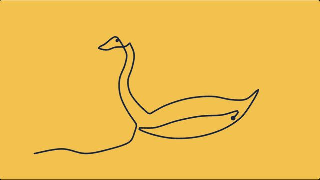
Timing
The line draws on at an even speed over about 3.5 seconds, eased at the start and the end, then the drawing holds. Full frame rate: a clean ink line should not step.
Assets
All in code. Place the control points on a sketch of the subject first.
Sound
A pen on paper under the draw-on, then silence. A single sustained note or a gentle piano. Practice note.
What makes it read as this
One line, constant width, round ends, that never breaks
A flat single-colour ground and a single ink colour
The line crosses itself and doubles back rather than lifting
A pen dot at the tip while it draws
Plenty of empty space round the subject
What makes it look wrong
Lifting the pen: a second path makes it a normal line drawing
Jitter or boil, which fights the idea of one smooth line
Too much detail: the form must read from the outline alone
How to build it
Build the path as a smooth spline through hand-placed points (spline() in looks-painted.js)
Resample it to points evenly spaced by length, so the pen moves at a steady speed
Draw it to a fraction k of its length with strokePart(); round caps and joins
Put a filled dot at the point where the line currently ends
SVG route: stroke-dashoffset on a single path
Drawn and paintedbrief2mp4 art forms
Drawn and painted · 12 changes a second · HyperFrames (canvas)
Paint-on-glass
Oil paint smeared on a lit sheet of glass: translucent colour that glows against the light, deeper where it is thick, finger streaks dragged behind, and shapes that melt from one thing into the next. A technique for animated films made by manipulating slow-drying oil paints on sheets of glass; gouache mixed with glycerine is sometimes used instead. The best-known practitioner is the Russian animator Aleksandr Petrov, who has used it in seven films, all of which have won awards.
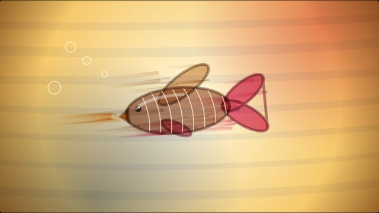
Timing
One frame at a time, about 12 changes a second. The picture is smeared and re-pushed on each step, so streaks and edges move a little every frame.
Assets
All in code. Real glass-paint scans work as a texture layer over the lamp.
Sound
A wet, squelching foley on every move, a slow and dreamy bed. Practice note.
What makes it read as this
Translucent colour over a bright backlight: paint multiplies, so overlaps go darker
A thicker, darker rim round each daub
Finger streaks trailing behind moving shapes
Lines scratched through the paint that let the light through
One shape morphs into another instead of cutting
What makes it look wrong
Opaque colour, which loses the glow
Sharp vector outlines round the shapes
Cuts between forms: the look depends on continuous morphing
How to build it
Draw the lamp as a radial gradient, then paint everything with globalCompositeOperation = 'multiply'
Each daub: a filled shape, a darker rim stroke, and a dozen gradient-faded streaks (daub() in looks-painted.js), with streak lengths re-seeded on each step
Morph by interpolating the shape parameters (size, angle, colour) with easeInOut
Scratches: switch to source-over and draw thin cream lines clipped to the shape
Drawn and painted · 12 changes a second · HyperFrames (canvas)
Sand animation
A light table seen from above: a warm glowing backlight, sand as dark sepia masses, and light showing through wherever the sand is thin, with soft graded edges. The picture is made of filled shapes, and one shape is pushed into the next. A form of stop motion in which sand is shaped under a camera, often lit from behind by a lightbox so that the thickness of the sand gives shading and lines. Sand art is older than film: Navajo, Aboriginal Australian and Tibetan cultures made it, and the Japanese bonseki has been practised since at least the 7th century. Swiss animators Gisèle and Nag Ansorge and the American Caroline Leaf took it up for films in the 1960s.
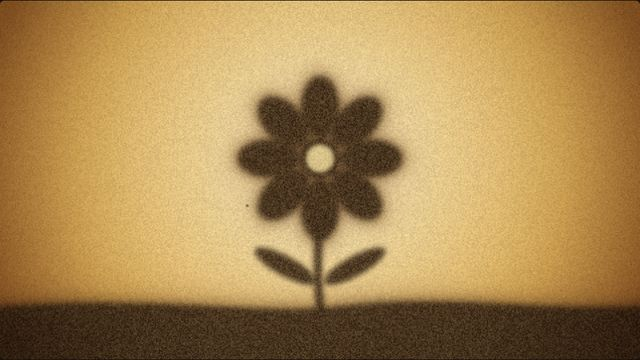
Timing
A figure grows in over about a second, then each change of form takes about 1.3 seconds. The picture steps about 12 times a second.
Assets
All in code. Real sand photographed on a light table makes a good grain layer.
Sound
A soft, dry, whispering rub as the sand moves, a slow music bed that suits a story. Practice note.
What makes it read as this
A bright, warm backlight, strongest at the centre and falling off at the edges
Sand is dark sepia to near-black where it is thick; bright where there is no sand; amber and soft where it is thin
Filled masses with soft, graded edges, never outlines
One form flows into the next as a hand sweeps the sand: sun to flower to bird
Loose grains: dark specks on the light, bright pinholes in the dark masses
What makes it look wrong
Bright outlines drawn on a dark ground: that reads as lines scratched in beach sand, not as sand on a light table
A flat brown background with no backlight glow
Hard-edged vector shapes: the edges of sand are soft and graded
How to build it
Paint the table as a radial gradient from pale cream to amber to brown
Describe each figure as the same number of soft ellipses (position, size, angle); blend two figures number by number with easeInOut to morph (SAND_SUN, SAND_FLOWER, SAND_BIRD in looks-painted.js)
Draw each mass three times with filter: blur(): a wide amber halo, a mid brown body, a dark core (sandMass())
Heap a few dark grains at the edge while a shape is moving
Finish with dark and light speckle and a multiplied vignette
Drawn and paintedbrief2mp4 art forms
Drawn and painted · 8 changes a second · HyperFrames (canvas), or Blender with a toon material for 3D
Retro anime (80s and 90s)
A hand-painted television look: hard two-tone shading, banded sunset skies, a striped sun, a lit skyline, a figure from behind with hair and scarf in the wind, a little film grain and a soft glow. Anime is animation originating from Japan; a characteristic art style emerged in the 1960s and spread in the following decades. Traditional animation paints the characters on transparent cels laid over a static painted background, a process generally credited to Earl Hurd, who patented it in 1914.
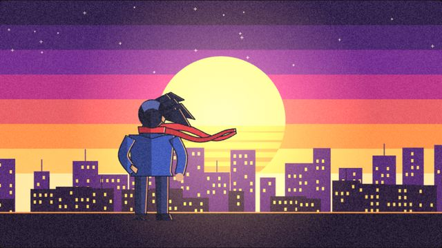
Timing
Drawn on threes: about 8 changes a second inside a 24 frames-a-second film. The sun rises slowly, windows twinkle and hair streams.
Assets
All in code. For real character art, paint on layers and keep the shadow tone as its own layer.
Sound
A synth pad and a drum machine, city ambience, wind on the rooftop. Practice note.
What makes it read as this
Hard-edged two-tone shading: one base colour and one shadow colour, no soft gradients on the characters
Banded, graded skies in stepped colour: violet to magenta to orange to cream
A big sun with horizontal slits, a lit skyline, a rim of warm light on the edges
Characters seen from behind or in profile, hair and scarf moving in the wind
Film grain, and a soft bloom around bright areas
What makes it look wrong
Smooth gradients on the figures: the shading is hard-edged
Smooth 24 frames-a-second motion on every layer, which loses the television feel
Copying a recognisable character
How to build it
Quantise time with held(t, 8) and key every flicker to frameOf(t, 8)
Sky: eight flat bands from fillRect; the sun is a clipped disc with a hard shadow tone and slits cut across it
Shade a character with a base polygon and a second polygon of the shadow colour on one side
Bloom: a radial gradient drawn with lighter over the picture; grain: a speckle with a seed from frameOf(t, 8) % 6
Drawn and painted · 8 changes a second · HyperFrames (canvas or SVG)
Manga (black and white with screentone)
Black and white only: inked panels with thick borders, screentone dots for grey, speed lines and bursts, and one dramatic moment drawn large. Manga are comics or graphic novels originating from Japan; most conform to a style developed in Japan in the late 19th century, with a long history in earlier Japanese art.
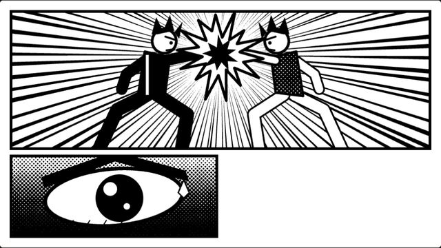
Timing
Panels slam in one after another, 0.1 to 2.2 seconds, and the speed lines re-roll about 8 times a second. Stepped, not smooth.
Assets
All in code.
Sound
Sharp impact hits, a sword-ring or a drum, silence between panels. Practice note.
What makes it read as this
Pure black and pure white: no greys and no colour
Panels with thick black borders and uneven sizes: one big panel for the moment, smaller ones around it
Tone: halftone dots of one size per area, at a slant, for shadow and mood
Speed lines that converge on the point of impact; a burst shape for the hit
Bold line weights and spiky hair; faces in extreme close-up for emotion
What makes it look wrong
Any grey or colour
Panels that are all the same size
Speed lines that do not converge on the action
How to build it
Each panel: a clipped rectangle that scales from 1.12 to 1 with easeOut as it appears
Speed lines: thin black wedges between two radii with a seeded length per line, re-seeded on each step (speedLines() in looks-toon.js)
Screentone: a rotated dot grid whose radius follows a value function (halftone() in looks-folk.js)
Draw figures from local coordinates and mirror them for the second fighter
Use only #000 and #fff: no antialiased greys except at edges
Drawn and paintedbrief2mp4 art forms
Drawn and painted · 12 changes a second · HyperFrames (canvas or SVG)
Chibi
A character two or three heads tall: a huge head, a tiny body, big shiny eyes, rosy cheeks and a bounce with a real squash and stretch. Chibi, also known as super deformation (SD), is an art style originating in Japan and common in anime and manga, where characters are drawn small and chubby with stubby limbs, oversized eyes and heads, tiny noses and bodies, and minimal detail. The word comes from chibi kyara, "tiny character".
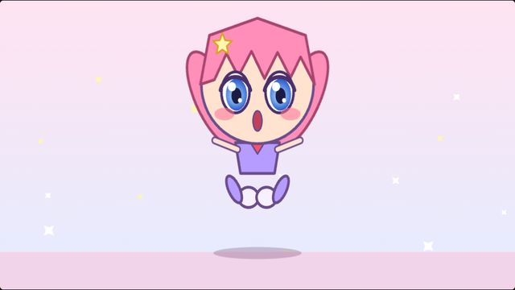
Timing
A bounce about once a second on twos (12 changes a second), with a blink every 2 to 3 seconds.
Assets
All in code. Original characters only: do not trace an existing one.
Sound
A bright, bouncy pop track, a spring boing on each landing. Practice note.
What makes it read as this
The head is as wide as the body is tall: two to three heads high
Big eyes with a gradient iris and two highlights; tiny nose and mouth
Stubby limbs and minimal detail on the body
Soft rounded outlines in a darker shade of the fill, not black
Bounce with squash on landing and stretch in the air
What makes it look wrong
A body longer than the head
Squash with no matching stretch
Copying a recognisable character
How to build it
Pose the whole character in local coordinates and apply ctx.scale(1 + s, 1 - s) about the feet, where s follows the landing and the air time
Eyes: a white ellipse, a radial-gradient iris, a dark pupil, two white highlight discs and a heavy upper lash arc
Twin tails swing by an angle that follows the bounce
Floating star sparkles drift by stepped time
Drawn and painted · 12 changes a second · HyperFrames (canvas or SVG)
Modern TV cartoon
Thick, even outlines and flat, bright colour on simple geometric characters: squares, circles and triangles with big eyes, bouncing on twos against a plain, flat background. In the animation sense a cartoon is a motion picture that relies on a sequence of illustrations. Limited animation reuses frames of character animation to save time and money, and in the late 1990s web animators using cutout and limited animation produced clean, vector-graphic pictures at small file sizes.
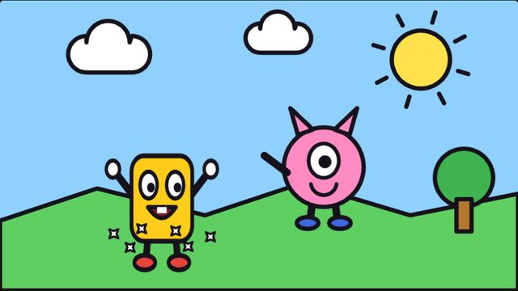
Timing
Drawn on twos, 12 changes a second, with holds, bounces and a blink every couple of seconds.
Assets
All in code. Original characters only.
Sound
A quick jazz or brass bed with a boing on each bounce. Practice note.
What makes it read as this
One thick outline weight round everything, in a near-black
Flat, saturated colour with no shading or only one flat shadow
Characters built from simple shapes: squares, circles, triangles
Big round eyes with a small pupil; a simple wide mouth
Plain, flat backgrounds: a hill, a cloud, a sun, a tree
What makes it look wrong
Gradients, textures and thin outlines
Realistic proportions
Copying a recognisable show's characters
How to build it
Draw each shape with a fill and an 8 px outline of the same dark colour (ell() and polyFill() in looks-toon.js)
Bounce: a parabola from the cycle phase, with a squash of a few percent at landing
Blink: replace the eye with a line for 0.15 seconds
Limbs are single thick strokes with a circle at the end
Keep the palette to six or seven colours
Drawn and paintedbrief2mp4 art forms
Drawn and painted · 8 changes a second · HyperFrames (canvas or SVG)
Gothic cartoon
Spindly, hollow-eyed figures and crooked houses with lit windows under a pale moon, curly trees and bats, in purple and black: a cartoon that is spooky and funny at once. Gothic fiction is a literary aesthetic of fear and haunting; the name comes from the Renaissance use of "gothic" for the medieval and barbaric, and the first work labelled Gothic was Horace Walpole's 1764 novel The Castle of Otranto.
Sourcing note: No source on the page describes a gothic cartoon look; the rules are a practice summary. The origin line is only the root of the word.
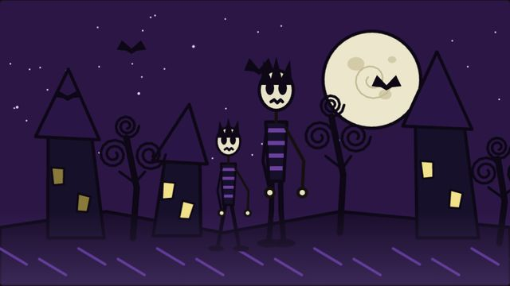
Timing
Everything sways on twos, about 8 changes a second: houses lean back and forth, trees swing, figures step and bats flap.
Assets
All in code. Original characters only.
Sound
A creaking harpsichord or a music box, a distant wolf, wind. Practice note.
What makes it read as this
Tall, thin figures with long limbs, big heads, hollow eyes and spiky hair
Crooked houses and trees: nothing stands straight; roofs are tall and pointed
A palette of purple and near-black with a pale moon and a few lit windows
Curly, spiral branches and moon marks
Bats, stars and a low fog, with everything swaying a little
What makes it look wrong
Straight lines and symmetric buildings
Bright, cheerful colour
Copying a recognisable character or a studio's house style
How to build it
Lean every house with ctx.transform(1, 0, lean, 1, 0, 0) where lean is a small sine of stepped time plus a fixed tilt
Trees: a curved trunk with spiral ends from curlPts()
Figures: thin rectangles and strokes in local coordinates, scaled for depth
A fog gradient across the ground and a few flickering windows
Geometry, pixels and 3Dbrief2mp4 art forms
Geometry, pixels and 3D
Looks built from blocks, facets and pixels, and the clean studio shot.
Geometry, pixels and 3D · smooth · HyperFrames (canvas, SVG) or Three.js
Isometric
A parallel projection seen from above at an angle: no perspective, three visible faces per block, a tidy model world. A technical drawing projection. Games use a 2:1 pixel slope, about 26.6 degrees, which is strictly dimetric.
Timing
The camera does not orbit. Objects drop, stack and slide along the three axes, staggered by grid position.
Assets
All in code.
Sound
Soft clicks as pieces land. Practice note.
What makes it read as this
No perspective: parallel lines stay parallel
Three tones per object: top lightest, one side mid, one side darkest
One light direction for everything
A grid floor
What makes it look wrong
A perspective camera by accident
Shadows that disagree with the light
Uneven block heights
How to build it
2D: x = (gx - gy) * s, y = (gx + gy) * s / 2 - gz * s; draw the two side faces, then the top
Sort by gx + gy, then by height, so nearer cubes cover farther ones
Three.js: an OrthographicCamera placed at equal x, y and z looking at the origin
CSS: rotateX(60deg) rotateZ(-45deg) on a flat layer
Use Blender for bevelled, ambient-occluded isometric scenes.
Geometry, pixels and 3D · smooth · Three.js inside HyperFrames
Low-poly 3D
Meshes with few polygons, each face lit as one flat facet. A hardware limit that became a style. From the era of early 3D consoles; chosen on purpose since about 2013.
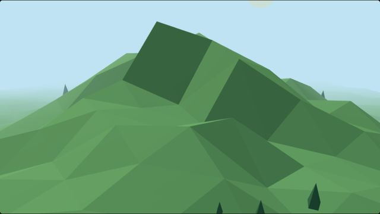
Timing
Clean, so smooth: slow eased orbits and dollies at the full frame rate.
Assets
Geometry in code for landscapes and props. Characters need modelling.
Sound
Calm, spacious. Practice note.
What makes it read as this
Visible facets, flat shaded
A limited, saturated palette
Simple lighting and a gradient or flat sky
Chunky silhouettes
What makes it look wrong
Smooth normals, which erase the facets
Detailed textures that fight the flat colour
How to build it
Low segment counts and flatShading: true on MeshStandardMaterial
Displace a plane's vertices with a seeded hash for terrain, then computeVertexNormals()
A hemisphere light plus one directional key; fog in the sky colour for depth
Camera position from t directly
Use Blender for modelling and baked light.
Geometry, pixels and 3Dbrief2mp4 art forms
Geometry, pixels and 3D · 12 changes a second · Three.js inside HyperFrames
Voxel
Everything built from cubes of one size on a grid, like a three-dimensional pixel picture. A voxel is a value on a 3D grid. Minecraft made the look familiar.
Timing
On twos. Things appear cube by cube or layer by layer; moves snap to the grid.
Assets
Models as arrays in code, or made with a voxel editor.
Sound
Blocky, percussive, chiptune. Practice note.
What makes it read as this
One cube size, integer positions
Each face one flat tone
A small palette
Small floating scenes
What makes it look wrong
Cubes at non-integer positions
Faces flickering where cubes touch at full size
How to build it
One InstancedMesh of a box for all the cubes: one draw call
Set each cube's matrix from stepped time; hide a cube by scaling it to nothing
Cubes slightly under size (0.96) so the seams read
MeshLambertMaterial and a hemisphere light
Geometry, pixels and 3D · 8 changes a second · HyperFrames (canvas)
Pixel art
A tiny picture placed pixel by pixel and scaled up with hard edges: a few colours, no blur, sprites that step. From early video games; the term dates from 1982.
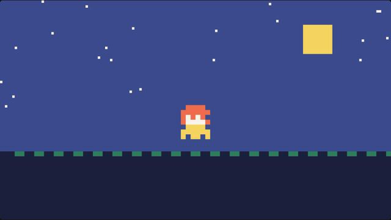
Timing
Walk cycles of 4 to 8 frames at about 8 a second. Scrolling moves in whole pixels.
Assets
Sprites as data in code, or drawn in a pixel editor.
Sound
Chiptune. Practice note.
What makes it read as this
A small canvas scaled by a whole number
A limited palette, often 8 to 32 colours
No anti-aliasing, no soft gradients
Sprites animate in a few frames
What makes it look wrong
Scaling by a fraction
Mixed pixel sizes on one screen
Smooth vector edges or too many colours
How to build it
Draw on a small canvas (160 by 90), then drawImage it up with imageSmoothingEnabled = false
CSS: image-rendering: pixelated on an upscaled canvas
Sprites as arrays of palette indexes
Three.js: RenderPixelatedPass renders a 3D scene to low resolution with nearest filtering
Geometry, pixels and 3Dbrief2mp4 art forms
Geometry, pixels and 3D · smooth · Three.js, the 3D pack, or Blender
3D product render
A studio shot of an object: a seamless backdrop, soft key, fill and rim lights, controlled reflections, a slow turn. Product photography lighting, done in 3D.
Sourcing note: The lighting source is about photography; applying it to rendering is a practice note.
Timing
Smooth and slow at the full frame rate. The opposite of the handmade looks.
Assets
A model of the product: built in code, made with the 3D pack, or supplied.
Sound
Minimal: a low bed and one accent on the reveal. Practice note.
What makes it read as this
A seamless backdrop
Key light to one side and above, a softer fill opposite, a rim light behind
A contact shadow under the object
True materials: gloss, metal, glass
One slow move
What makes it look wrong
No reflections, so it looks like plastic
One harsh light
An object floating with no shadow
How to build it
MeshPhysicalMaterial with clearcoat for lacquer, metalness: 1 for metal
Three directional lights in the key, fill and rim positions, plus a hemisphere light
Contact shadow: a plane with a radial-gradient texture, depthWrite: false
Rotation from t directly; ease the camera, not the turntable
Use Blender when the brief asks for photoreal glass, caustics or depth of field.
Geometry, pixels and 3D · smooth · Three.js inside HyperFrames, or Blender
Stylised 3D cartoon
A soft, rounded 3D cartoon character or prop with a big readable face: smooth forms, a soft key light, a cool rim light and warm light that seems to pass through the skin. The demo is drawn in 2D, so it renders with no WebGL; the Three.js recipe below is how to build the real thing. Three-point lighting is a standard method in film, photography and 3D graphics: the key light is the principal illuminator, usually 30 to 45 degrees to one side of the camera and elevated about as much. Subsurface scattering is light travelling into a translucent surface and out again at another point; without it a material can look like plastic or metal.
Sourcing note: The two sources cover the lighting and shading ideas; the face and softness rules are a practice summary.
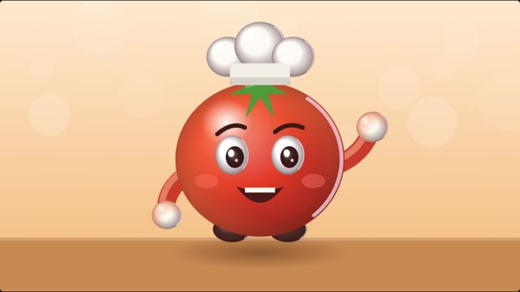
Timing
Smooth, full frame rate: a slow breath, a bounce, a blink every three seconds and a wave. The squash and stretch are small and soft.
Assets
All in code here. For a real character, model it in Blender and export a glTF.
Sound
Soft foley, a light orchestral bed and a spring on each bounce. Practice note.
What makes it read as this
Smooth, rounded forms with no hard edges: spheres, capsules and soft boxes
A big, readable face: large eyes with a gradient and two highlights, clear brows, a wide mouth
A soft key light from the upper left, a cool rim light on the far edge, and a soft specular highlight
A warm glow at the shadow edge, as light bleeds through the skin
A shallow-depth background of blurred lights and a soft contact shadow
What makes it look wrong
Hard black outlines: they turn it into toon 3D
Plastic highlights and no warm bleed at the shadow edge
A small face: the face must be readable at a glance
Copying a recognisable studio character
How to build it
Three.js: MeshPhysicalMaterial with sheen, a low clearcoat, and transmission or a warm emissive rim for the subsurface look
Lights: a DirectionalLight key at about 40 degrees, a cool back DirectionalLight for the rim, a HemisphereLight fill, and ACESFilmicToneMapping
Add OutputPass and a gentle UnrealBloomPass; soft PCFSoftShadowMap shadows
Add a shallow depth of field with BokehPass
In the 2D demo: ball() builds each form from an offset radial gradient, a warm inner gradient, a rim arc and a soft highlight
Geometry, pixels and 3Dbrief2mp4 art forms
Geometry, pixels and 3D · smooth · Three.js inside HyperFrames, or Blender (Freestyle)
Toon 3D (cel-shaded, comic-book)
3D forms cut into two or three flat shading bands, with a thick ink outline on every silhouette and a printed, painterly comic-book feel. The demo is drawn in 2D, so it renders with no WebGL; the Three.js recipe below is how to build the real thing. Cel shading, or toon shading, is a type of non-photorealistic rendering that makes 3D graphics look flat and hand-drawn: conventional smooth lighting values are quantised to a few discrete shades, so that shadows and highlights appear as blocks of colour. Black ink outlines can be made by first rendering a slightly larger black copy of the object with its back faces drawn.
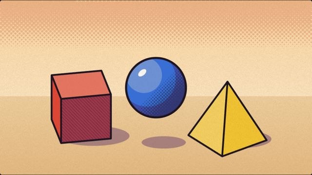
Timing
Smooth rotation and bounce at the full frame rate; or stepped on twos for a hand-drawn feel.
Assets
All in code here.
Sound
Brush-stroke whooshes and a drum loop. Practice note.
What makes it read as this
Two or three flat bands of colour: a light, a base and a shadow, with hard edges
A thick ink outline round the silhouette
The shadow band tinted toward purple or blue, not just darker
Print texture: halftone dots, hatching lines and paper grain
A hard highlight spot and a hard-edged ground shadow
What makes it look wrong
Smooth gradients inside the bands
Thin or uneven outlines
More than three bands: it starts to look like normal shading
How to build it
Three.js: MeshToonMaterial with a gradientMap of 3 texels (DataTexture with NearestFilter), so that lighting steps in three bands
Outlines: OutlineEffect from the examples, or draw a back-face copy scaled by 1.03 in black
Add a HalftonePass, or a halftone texture multiplied into the shadow band
Tint the shadow band in the gradient map toward purple
In the 2D demo: turn() rotates vertices, face normals pick one of three bands (band3()), and a thick ink stroke outlines each face
Geometry, pixels and 3D · smooth · Three.js inside HyperFrames
Point cloud and lidar scan
An object or scene made of thousands of glowing points on black, in blue and gold, turning slowly, with points that fade and shrink as they recede. The demo is drawn in 2D, so it renders with no WebGL; the Three.js recipe below is how to build the real thing. A point cloud is a discrete set of data points in space; each has X, Y and Z coordinates and may carry colour and other data. Point clouds are produced by 3D scanners or photogrammetry software. Lidar measures distance by timing the return of laser light, and is used to make high-resolution maps.
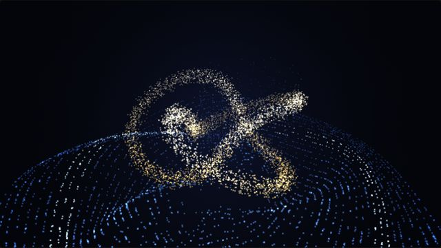
Timing
A slow turn at the full frame rate; the cloud builds up over about 1.6 seconds and the scan pulse crosses the ground every 3 to 4 seconds.
Assets
All in code here. Real scans come from a lidar device or a photogrammetry run.
Sound
A low synth pulse and a soft ping as the scan passes. Practice note.
What makes it read as this
Only points, no surfaces or lines
Glowing points on black, in two hues: blue for the ground, gold for the object
Depth: far points are smaller and dimmer
Scan structure: rings or lines of points, and a pulse of brighter points sweeping over them
A slow turn, a high camera, and a faint vignette
What makes it look wrong
Joining the points with lines or surfaces
Opaque, same-sized points: no depth
Too few points: it reads as sparkle, not as an object
How to build it
Three.js: Points with a BufferGeometry, PointsMaterial (sizeAttenuation: true, vertexColors, AdditiveBlending, depthWrite: false)
Size by depth in a custom shader: gl_PointSize = base / -mvPosition.z
Real data: load a PLY or PCD scan with the examples loaders
Scan pulse: a uniform radius that brightens the points near it
In the 2D demo: project each point with a turn, a tilt and a perspective factor, and draw it as a tiny square with lighter compositing (plot())
Geometry, pixels and 3Dbrief2mp4 art forms
Geometry, pixels and 3D · smooth · Three.js inside HyperFrames, or Blender
Tilt-shift miniature diorama
A tiny town seen from a high camera: saturated toy colours, little cars looping round the roads, and a blur that grows toward the top and bottom of the frame, so that it looks like a model. The demo is drawn in 2D, so it renders with no WebGL; the Three.js recipe below is how to build the real thing. Tilt-shift photography uses camera movements that change the orientation or position of the lens relative to the sensor; the term is also used when a shallow depth of field is simulated in post-processing. A diorama is a replica of a scene, typically a three-dimensional model, miniature or full-size.
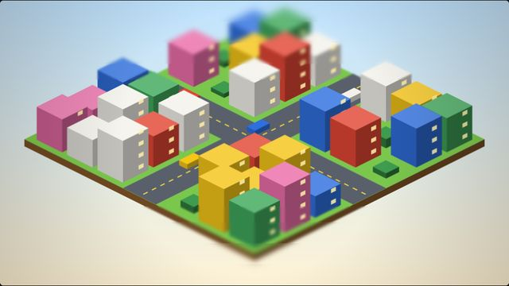
Timing
Smooth: cars loop round the roads at different speeds, and the camera is still.
Assets
All in code here.
Sound
A light ukulele bed and distant traffic noise. Practice note.
What makes it read as this
A high camera looking down at an angle
A sharp band across the middle, with blur growing toward the top and bottom edges
Saturated, toy-like colours and simple blocky buildings
Tiny moving things: cars, boats or people
Soft, slightly raised contrast and a light vignette
What makes it look wrong
Blur across the whole frame, which reads as out of focus
Muted, realistic colours
A low camera: the miniature look needs a high angle
How to build it
Three.js: an OrthographicCamera or a narrow-FOV PerspectiveCamera placed high, and InstancedMesh buildings
Tilt-shift: render to a target and blur it with a vertical mask, as in the HorizontalTiltShiftShader and VerticalTiltShiftShader examples, or use BokehPass with a focal band
Raise saturation and add a soft vignette with an OutputPass and a colour-grade pass
In the 2D demo: draw the town to an off-screen canvas, then draw it again through several clipped bands with increasing blur() (diorama)
Geometry, pixels and 3D · smooth · HyperFrames (canvas or Three.js)
Parallax 2.5D
Four to six flat painted layers moving at different speeds as the camera pans: a sky, far mountains, hills, a row of trees, a field and grass in front, so that a flat scene feels deep. The demo is drawn in 2D, so it renders with no WebGL; the Three.js recipe below is how to build the real thing. Parallax scrolling is a technique where background images move past the camera more slowly than foreground images, creating an illusion of depth in a 2D scene. It grew out of the multiplane camera used in traditional animation since the 1930s, which moved layers of artwork at different speeds and distances.
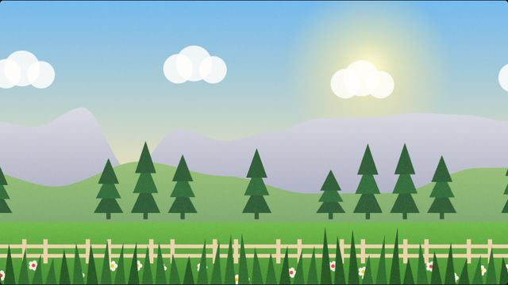
Timing
A steady pan to the right at about 90 px a second; speeds from 0.02 for the sun to 1.8 for the grass blades. Smooth, full frame rate.
Assets
All in code here. For real layers, paint each on a transparent PNG.
Sound
Wind, birdsong, a gentle acoustic bed. Practice note.
What makes it read as this
Layers, each one flat: sky, far mountains, hills, trees, field, foreground
Each layer moves at its own speed: the nearer, the faster
Distant layers are hazier and lighter; near layers darker and more saturated
Layers repeat seamlessly as the camera pans
A fixed or very slow sky and sun
What makes it look wrong
All layers moving at the same speed
Visible seams where a layer repeats
Detail in the far layers that competes with the foreground
How to build it
Three.js: flat PlaneGeometry layers with textured MeshBasicMaterial at different z depths and a PerspectiveCamera moving along x, or the same layers with an orthographic camera scaling each layer's x motion
In the 2D demo: each layer is drawn in screen columns offset by camera * speed, wrapping with Math.floor(offset / width), and ridges come from value noise of world x (ridge())
Add atmospheric haze by mixing far layers toward the sky colour
Add a slight vertical bob to the camera
Type, data and retrobrief2mp4 art forms
Type, data and retro
Looks where words, numbers or the recording medium are the picture.
Type, data and retro · smooth · HyperFrames (DOM)
Kinetic typography
Moving words as the whole picture: scale, weight and timing carry the meaning. Saul Bass's title sequences for North by Northwest (1959) and Psycho (1960) made it a form.
Timing
Each word lands in 0.3 to 0.5 seconds with a small overshoot, then the line holds long enough to read.
Assets
A typeface with enough weights. No pictures.
Sound
Cut to the voice or the beat. Practice note.
What makes it read as this
Type is the image; nothing competes with it
Strong contrast of size and weight
Words arrive in reading order, on the beat
One idea per frame
What makes it look wrong
Words faster than they can be read
Effects that add no meaning
Everything moving at once
How to build it
HyperFrames: split text into inline-block spans and stagger with GSAP
Canvas: fillText with a transform per word
Timing from the narration: one start time per word
Hold for (words / 3) + 0.5 seconds before the next line
Type, data and retro · smooth · HyperFrames (SVG, canvas)
Infographic and data animation
A chart that builds in a sensible order: axes, then the data from an honest baseline, then the exact values. From Playfair's first charts in 1786 to animated infographics in music videos in 2002.
Timing
Axes in about half a second, each series over 0.8 to 1.5 seconds with an ease-out, then a hold to read.
Assets
The data, with its source.
Sound
A tick or tone per value, a bed that stays out of the way. Practice note.
What makes it read as this
One chart type that fits the data
Direct labels, not a legend
An honest axis: bars start at zero
One colour for the point being made
What makes it look wrong
Numbers that were not checked
3D bars
An axis cut off to exaggerate a difference
How to build it
Drive the chart from one time value; never use a chart library's own transitions
Bars grow from the baseline; counters show the rounded value as it grows and end on the exact figure
SVG or canvas with scale maths; D3 scales are enough
Every number needs a source in the brief
Type, data and retrobrief2mp4 art forms
Type, data and retro · smooth · HyperFrames (DOM, canvas)
Lyric video
The words of a song as the main image, each line timed to the vocal and the active word lit. Lyric text appears in music videos from the 1980s; the format took off on video sites in the 2010s.
Timing
Locked to the music. A word changes exactly on its beat; a few frames late is visible.
Assets
The audio, with the right to use it, and its word timings.
Sound
The song.
What makes it read as this
Three to eight words on screen
The word being sung is brighter or larger
A background that never fights the text
One typographic system for the whole song
What makes it look wrong
Timing that drifts
Text over a busy background
Music you have no licence for
How to build it
Word start times from forced alignment or a beat grid
Compute the active line and word from t
A pulse from the beat phase: 1 - (beat % 1) drives scale and background
Measure words first so the line is centred
Type, data and retro · 30 changes a second · HyperFrames (canvas) or Three.js post-processing
VHS and glitch
The damage of old tape and broken data: colour that bleeds sideways, scan lines, a band of noise at the bottom, sudden torn slices. VHS records colour at far lower resolution than brightness, which is why colour smears. Glitch art uses such errors on purpose.
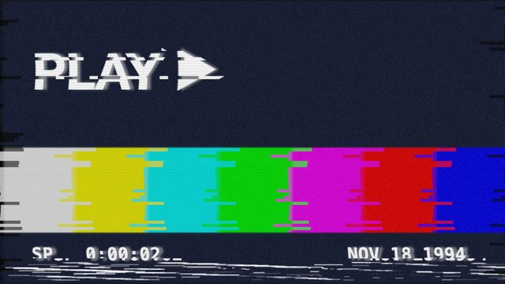
Timing
Full frame rate, with bursts of a fifth of a second. Seeds come from the frame number so every render matches.
Assets
All in code.
Sound
Tape hiss, hum, a click on each burst. Practice note.
What makes it read as this
Colour offset from brightness by a few pixels and softer
Scan lines
A tracking band of noise near the bottom
A date stamp in a blocky face
Glitch: slices displaced sideways, in short bursts
What makes it look wrong
Constant glitching, which tires the eye
Glitching text the viewer has to read
Unseeded randomness, so two renders differ
How to build it
Draw the clean frame to its own canvas first, then the damage on top
Redraw it in thin horizontal strips with a per-strip offset; large offsets only during a burst
Chroma bleed: a blurred copy drawn again a few pixels to the side with screen
Scan lines: a dark row every third pixel
Three.js: FilmPass, RGBShiftShader and GlitchPass exist; GlitchPass picks its own random timing, so check it repeats before relying on it
Type, data and retrobrief2mp4 art forms
Type, data and retro · smooth · HyperFrames (SVG, canvas)
Blueprint and technical drawing
White lines on blue: a grid, an object drawn in outline, centre lines, dimensions and a title block. The blueprint is a cyanotype copy of an engineering drawing, introduced in 1842: white lines on blue.
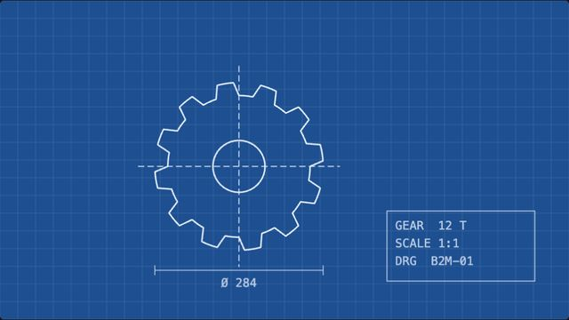
Timing
Steady: lines draw on, then dimensions and labels fade in. No bounce.
Assets
All in code.
Sound
A pen plotter, a pencil. Practice note.
What makes it read as this
White or pale lines on a deep blue
A faint grid
Dashed centre lines, dimension lines with end ticks
A title block in a monospace face
What makes it look wrong
A neon blue
Labels that say nothing
Perspective in the drawing
How to build it
Grid: thin lines every 30 px at low opacity (CSS: repeating-linear-gradient)
Draw-on with stroke-dashoffset or a partial polyline
Dashed centre lines with setLineDash
Dimension lines: a line, two end ticks and a centred label
Type, data and retro · 24 changes a second · HyperFrames (canvas, SVG)
Neon sign
Glass tubes bent into letters and lit: a bright core, a coloured glow, a dark wall, tubes that light one by one and sometimes flicker. Glass tubing filled with gas and lit by electrodes; sections can be switched in sequence.
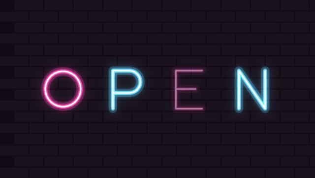
Timing
Tubes come on in order with a short stutter each; now and then one dims for a frame.
Assets
Letter paths in code. A brick or plaster texture can be drawn.
Sound
A low electrical hum, a tick as each tube lights. Practice note.
What makes it read as this
One continuous line per letter, one width
A white-hot core inside a coloured halo
A dark wall behind
Letters light in sequence
What makes it look wrong
A glow so wide the word cannot be read
Filled letters instead of a single tube
Flicker that differs between renders
How to build it
Each tube is drawn three times: a wide faint stroke, a medium one, a thin white core, all with shadowBlur
Add them with the lighter blend (CSS: mix-blend-mode: plus-lighter or screen)
Flicker from hash(frame, tube), never from a random call
Three.js: UnrealBloomPass for bloom on emissive geometry
Type, data and retrobrief2mp4 art forms
Type, data and retro · smooth · HyperFrames (canvas), or Manim for real maths
Maths diagram
A chalk-on-navy maths explainer: an equation builds term by term, each term in its own colour with its own curve on the plot, then the sum curve draws on and a tangent line slides along it with its slope read out. A tangent line to a curve at a point is the straight line that just touches the curve there; for a curve y = f(x) it passes through (c, f(c)) with slope f'(c), where f' is the derivative. Chalk on a dark board is the classic surface for showing such working.
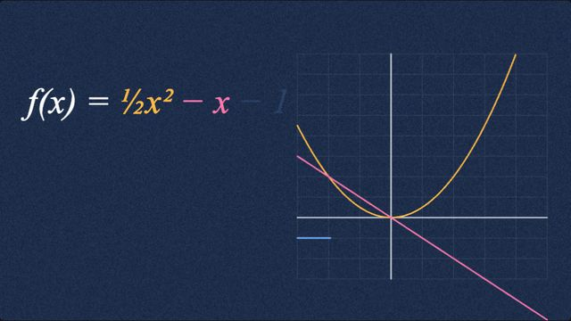
Timing
Terms appear at 0.3, 1.2 and 2.1 seconds, the sum curve draws from 2.8 to 4 seconds, and the tangent then slides back and forth. Smooth, full frame rate.
Assets
All in code here. For typeset equations in a real film, use Manim's LaTeX support.
Sound
Chalk taps as each term lands, a calm piano and a clear voice. Practice note.
What makes it read as this
One colour per term, used in the equation and again for that term's curve
Axes and a faint grid, a bright sum curve, a gold tangent with a dot at the point of tangency
Terms appear one at a time, in the order the plot is built
Few words: the equation, a derivative line and a slope readout
A navy board with a light chalk dust
What makes it look wrong
Every term in the same colour
A wall of text or a crowded plot
A curve that appears all at once, with no build
How to build it
Map maths coordinates to the screen with two small functions (X(x), Y(y)) and draw each curve as a polyline up to a fraction k of its length
Measure each piece of the equation with measureText so that the next piece starts where the last ended
Tangent: y0 + m (x - x0) drawn over x0 +- 2.2, with m = f'(x0) read out in text
Real route for real maths: Manim (a Python library for mathematical animation) renders the same scene with exact Axes, Tex and ValueTracker objects, then HyperFrames or ffmpeg joins the clip
Add a speckle of white dust over the board colour
Type, data and retro · smooth · HyperFrames (canvas or SVG)
Sticker explainer
Die-cut stickers with a thick white border and a drop shadow pop onto a desk with a bounce: icons and bold word stickers, each tilted a little and swaying. A sticker is a label of plastic, vinyl or another material with a pressure-sensitive adhesive on one side, used for decoration or for function, in many shapes, sizes and colours.
Sourcing note: The source describes stickers as objects; the die-cut explainer look is a practice summary.
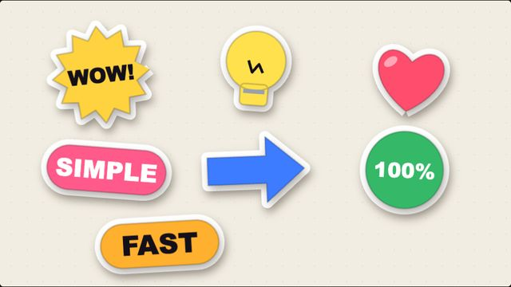
Timing
Each sticker pops in over about half a second with an overshoot, one every 0.3 seconds, then sways slightly. Smooth, full frame rate.
Assets
All in code. Real icon sets should be ones the user owns or may reuse.
Sound
A peel-and-stick pop and a cheerful bouncy bed. Practice note.
What makes it read as this
A thick white border follows each shape, with rounded corners: the die-cut line
A soft drop shadow lifts each sticker off the surface
Bold, saturated flat colour with a thin darker edge
Big, heavy word stickers: one word each
Each tilted a few degrees, and none perfectly aligned
What makes it look wrong
A white border of uneven width
No shadow: the stickers look printed on the page
Pop-ins with no overshoot
Too many stickers at once
How to build it
Describe each silhouette as a Path2D; draw it first with a 22 px white stroke and a white fill, with shadowBlur for the shadow, then fill the colour on top
Pop-in: scale by overshoot(prog(t, start, 0.55)), with a small rise from below
Sway: rotate by a sine of time scaled by how long the sticker has been there
Word stickers: a rounded rectangle with 900 weight text centred in it
Type, data and retrobrief2mp4 art forms
Type, data and retro · 12 changes a second · HyperFrames (canvas or SVG)
Memphis design
Scattered, playful confetti in the manner of 1980s Memphis design: squiggles and zigzags, triangles, circles and half-circles in red, yellow, blue and pink, black-and-white checks, stripes and dots. The Memphis Group, also called Memphis Milano, was an Italian design and architecture group founded by Ettore Sottsass and active from 1980 to 1987. Its postmodern work often used plastic laminate and terrazzo and was characterised by colourful, abstract decoration and asymmetrical shapes; the look became a ubiquitous aesthetic of the mid-1980s to mid-1990s.
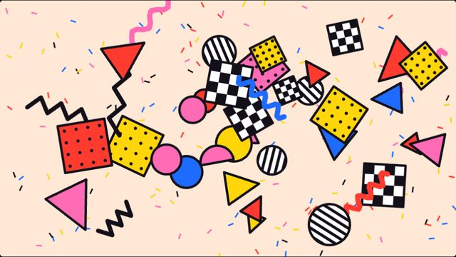
Timing
Shapes pop in over the first 1.6 seconds, then drift and turn slowly. Drawn at 12 changes a second.
Assets
All in code.
Sound
A bouncy synth-pop bed with clicks and pops. Practice note.
What makes it read as this
Bold primary colours with pink and black: red, yellow, blue and pink
Confetti shapes: triangles, circles, half-circles, squiggles and zigzags
Black-and-white patterns: checks, stripes and dots inside shapes
Thick black outlines and asymmetrical, overlapping placement
A pale peach or pink ground, with tiny terrazzo flecks
What makes it look wrong
Gradients and soft shadows
Neat alignment: Memphis is deliberately off-kilter
Muted colours
Copying a specific designer's piece
How to build it
Place each shape from a hash of its index: type, size, position, colour and spin
Patterns: a 4 by 4 checkerboard, a circle clipped to black stripes, a grid of dots
Squiggle: a sine polyline with a thick round-capped stroke
Pop-in with overshoot(prog(...)); drift with a sine of stepped time
Folk and print traditionsbrief2mp4 art forms
Folk and print traditions
Looks from living traditions of Indian folk painting and of print. Working artists keep them alive; these pages are code studies of the visual rules, not the craft itself.
Folk and print traditions · 8 changes a second · HyperFrames (canvas or SVG)
Madhubani (Mithila)
Double black outlines round bright flat fills, with every gap packed with hatching, dots or small motifs: fish, peacocks and lotuses inside a decorated border, with no empty space. It is a living tradition with working artists; the demo here is a code study of its visual rules, not the craft itself, and a film should credit the tradition and, where it can, commission or license work from the artists. Madhubani art, also called Mithila art, is a style of painting practised in the Mithila region of Nepal and Bihar. It was traditionally created by women of various communities on freshly plastered mud walls and floors of huts, and is now also done on cloth, handmade paper and canvas, with natural dyes and pigments.
Sourcing note: Wikipedia marks its line that no space is left empty, with the gaps filled by flowers, animals, birds and geometric designs, as needing a citation; confirm it against a museum or scholarly source before quoting it.
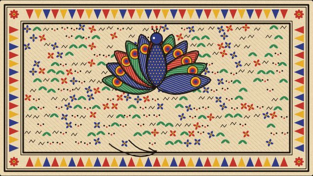
Timing
Elements are drawn on in order over about 4 seconds: border, ground motifs, then the large figures. The picture steps about 8 times a second.
Assets
All in code. Real work is done on handmade paper or cloth: a scanned paper texture helps if the user has one.
Sound
Soft folk percussion or a flute drone, a gentle brush sound as each figure draws on. Practice note.
What makes it read as this
Double black outlines: a bold line with a thin one inside it
Bright, flat colour: red, yellow, green and indigo, with black line work
Every gap is filled with hatching, dots, flowers, leaves or geometric marks: no empty space
Motifs from nature: fish, peacocks, lotus, the sun and moon, plants
A decorated border of triangles and flowers, drawn as part of the painting
What makes it look wrong
Empty space: the form is defined by filling it
Single thin outlines and gradients
Presenting a machine-made picture as authentic Madhubani art
How to build it
Build each figure as a smooth closed spline (closed() in looks-folk.js) and draw it with folkShape(): the outline draws round, the fill comes in, a pattern fills it, then an inner line follows
Patterns clipped to the shape: parallel lines, dot grids and scale arcs (lines(), dots(), scales())
Fill the ground first with a grid of small motifs, each chosen by a hash of its cell, so the gaps are never blank
Draw the border as a loop of triangles with a flower in each corner
Folk and print traditions · 8 changes a second · HyperFrames (canvas or SVG)
Warli
White figures drawn in simple shapes on a terracotta wall: a circle for a head, two triangles joined at their tips for a body, stick arms and legs, a ring of people dancing hand in hand round a tarpa player, trees, huts and a sun. It is a living tradition with working artists; the demo here is a code study of its visual rules, not the craft itself, and a film should credit the tradition and, where it can, commission or license work from the artists. Warli painting is tribal art made mostly by the Warli people of the North Sahyadri Range in Maharashtra, India, usually on the mud walls of village huts, in a white pigment of rice flour and water with a gum binder. Its basic shapes are the circle, triangle and square; people and animals are drawn as two inverse triangles joined at their tips, and the tarpa dance, in which men and women entwine hands and circle the tarpa player, is a central subject.
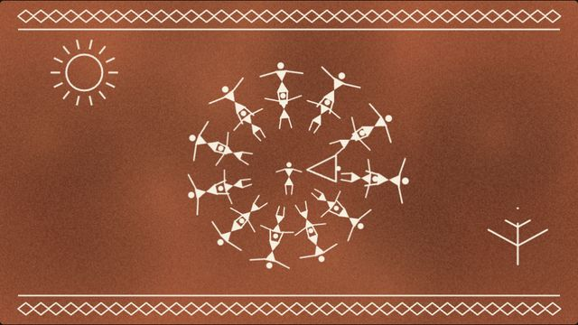
Timing
Figures appear one at a time over about 3 seconds and the spiral turns slowly while they step between two poses. The picture steps about 8 times a second, and the poses at 4.
Assets
All in code. A scan of a mud-plastered wall makes a stronger ground if the user has one.
Sound
Drum and tarpa-like reed drone, claps on the pose changes. Practice note.
What makes it read as this
White (rice-paste) lines and fills only, on a red-brown mud ground
Figures of a circle head and two triangles that meet at their tips, with stick limbs
A ring or spiral dance, hands joined, round a central player
Trees as a trunk with paired branches; a sun as a circle with strokes
Borders of repeating diamonds; huts as a square with a triangle roof
What makes it look wrong
Colour: the tradition is white on brown or red-brown
Rounded, realistic bodies
Presenting a machine-made picture as authentic Warli art
How to build it
Ground: base colour plus a dozen big soft radial gradients for daubed mud, then a fine speckle
A figure is two filled triangles, a disc and stroked limbs (warliFigure() in looks-folk.js), turned so the head points outward
Place figures along a spiral and add a slow rotation of the whole spiral from stepped time
Trees: a trunk and branches as paired strokes that shorten toward the top, a dot at each tip
Folk and print traditionsbrief2mp4 art forms
Folk and print traditions · 8 changes a second · HyperFrames (canvas or SVG)
Pattachitra
Bold black outlines and flat colour on a prepared ground: a thick ornamental border, an almond eye in profile, scale and fin patterns, and flowers and tendrils packed round the subject. It is a living tradition with working artists; the demo here is a code study of its visual rules, not the craft itself, and a film should credit the tradition and, where it can, commission or license work from the artists. Patachitra or Pattachitra is a traditional cloth-based scroll painting of the eastern Indian states of Odisha and West Bengal; the name comes from the Sanskrit patta, cloth, and chitra, picture. The Odisha tradition originated at Puri, is painted in natural colours on cloth coated with chalk and gum, and has bold, clean lines with no landscape or perspective.
Sourcing note: The fish in the demo is a decorative study of the border, outline, eye and fill rules; the tradition itself mostly depicts Hindu deities and stories, which Wikipedia describes.
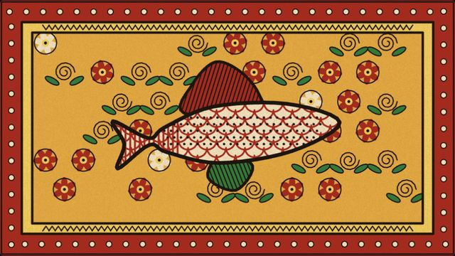
Timing
The ground motifs fill in over about 3 seconds, the main figure draws on over about 1.5 seconds. The picture steps about 8 times a second.
Assets
All in code. A scan of cloth or tea-stained paper helps if the user has one.
Sound
Drone and temple-bell texture, a rhythmic percussion under the border. Practice note.
What makes it read as this
A thick, ornamental border in red, yellow and black, with dots and zigzags
Bold, clean outlines and flat colour
Eyes in profile, drawn as an almond with a dark pupil
Dense floral fill: rosettes, leaves and spiral tendrils
Patterns inside the shapes: scales, fan lines, bands
What makes it look wrong
Thin outlines, gradients and perspective: the tradition is flat
Drawing deity faces from memory: the demo uses a fish for that reason
Presenting a machine-made picture as authentic Pattachitra
How to build it
Draw the border as flat bands with dots and zigzags (strokeRect, dot loops)
Fill the ground with rosettes (rosette()) and spiral tendrils (curl()) on an offset grid
The figure is a closed spline drawn with folkShape(), a heavy 8 px outline and a scale pattern
An almond eye: a closed four-point spline with a dark disc inside
Folk and print traditions · 8 changes a second · HyperFrames (canvas or SVG)
Gond
Animals and trees in thin black outline, filled with bold flat colour in bands, each band carrying fine repeated marks of one colour: dots, dashes, parallel lines or fish-scale arcs. A plain light ground, a bold crest and a decorated eye. It is a living tradition with working artists; the demo here is a code study of its visual rules, not the craft itself, and a film should credit the tradition and, where it can, commission or license work from the artists. The Gond, or Gondi, people are an ethnolinguistic group spread across central and eastern India, including Madhya Pradesh, Maharashtra and Chhattisgarh. The artist Jangarh Singh Shyam, born into a Pardhan Gond family in Patangarh, Mandla district, Madhya Pradesh, is credited with starting the school called Jangarh Kalam; he used lines of coloured dots, inspired by Gond tattoos, with bands of dots, dense cross-hatching and comb-lines, and painted animals such as tigers and deer.
Sourcing note: Wikipedia has no standalone Gond painting article, so the sources are the Gond people article and the article on Jangarh Singh Shyam, the artist most closely tied to the modern style. Confirm the wider tradition against a museum source before making claims in a film.
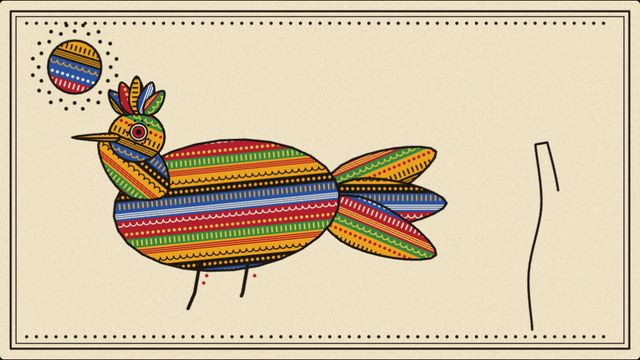
Timing
Parts draw on one after another over about 3 seconds, outline first, then the bands fill. The picture steps about 8 times a second.
Assets
All in code.
Sound
Drums and a stringed drone, a rhythmic tapping as each band fills. Practice note.
What makes it read as this
Thin black outlines round animals, birds and trees
Saturated flat colour: deep red, saffron, cobalt, leaf green and black
Each body is filled in bands; each band is a solid base colour with marks of ONE contrasting colour, never a rainbow inside a stripe
Mark types alternate band by band: rows of dots, short dashes, fine parallel lines, fish-scale arcs
Bold, decorated details: a crest, an eye with rings and dots, branches that curl in toward the animal
What makes it look wrong
Pastel stripes or a rainbow inside each band: the colours are saturated and each band has one mark colour
Gradients and shading
Presenting a machine-made picture as authentic Gond art
How to build it
Draw each part with folkShape() and a black fill under the bands
Bands: rotate to the shape's long axis, fill a 14 px strip with the base colour, then draw one mark type in the paired colour (gondBands() and the GOND colour pairs in looks-folk.js)
Trunks and branches: a tapering band along a spline (ribbon()), ending in a curl
Eye: a pale ring, a red ring, a dark pupil and a ring of small dots
Keep the ground plain; add only a dotted border
Folk and print traditionsbrief2mp4 art forms
Folk and print traditions · 8 changes a second · HyperFrames (canvas or SVG)
Indian miniature (Mughal and Rajput)
A small, richly detailed court painting in jewel tones: a flat, stacked space with no deep perspective, a gold border with a floral margin, fine ornament on every surface, and figures in profile. It is a living tradition with working artists; the demo here is a code study of its visual rules, not the craft itself, and a film should credit the tradition and, where it can, commission or license work from the artists. Mughal painting is a style of miniature painting, used for book illustrations and album pages, that developed at the Mughal court between the 16th and 19th centuries; its portraits are normally in profile. Rajput painting is the painting of the regional Hindu courts during the Mughal era, from about the end of the 16th to the middle of the 19th century, and its conservative idioms keep bright colour, flatness and abstract form.
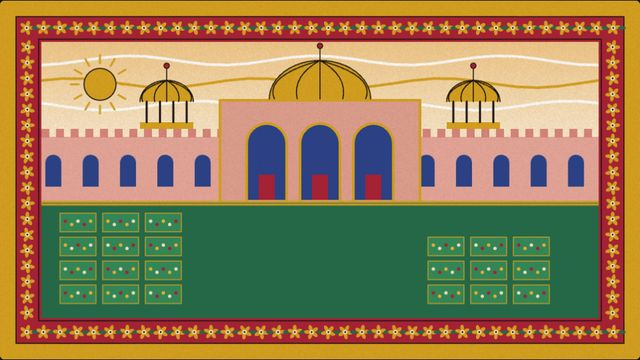
Timing
The border, the sky and the palace draw in over about 2 seconds, then the garden, water and figures. Birds drift and the fountain rises. The picture steps about 8 times a second.
Assets
All in code. For real pages use public-domain scans from museum collections and say so in REPORT.md.
Sound
Sitar or santoor, a quiet fountain, birdsong. Practice note.
What makes it read as this
Flat, stacked space: sky, palace, terrace and garden as bands, no deep perspective
Jewel tones: ruby, emerald, lapis, saffron and gold
A gold border with a floral margin, drawn as part of the painting
Figures in profile, small and seated, with turbans and robes
Fine ornament: domes, arches, flower beds, water channels
What makes it look wrong
Deep one-point perspective and cast shadows
Photorealistic faces
Presenting a machine-made picture as authentic Mughal or Rajput work
How to build it
Paint bands from back to front, each a flat fill with a thin dark line
Border: a ruby frame between gold lines with a row of small flowers (rosette())
Domes: half-ellipses with ribs, a finial and a small disc
Figures: a robe polygon, a profile head with a nose notch, a turban ellipse and one arm to a cup
Animate only small things: birds, the fountain, the cloud ribbons
Folk and print traditions · smooth · HyperFrames (canvas)
Engraving and banknote hatching
Fine lines cut like a burin: hatching that follows the form and swells in the shadow, cross-hatching where it is darkest, a vignette of waves, and a woven guilloche frame, in one or two inks on cream paper. Engraving is the practice of incising a design on a hard surface with a burin; the grooves can make an intaglio plate for printing. In traditional engraving, which is a purely linear medium, half-tones are made by many thin parallel lines, hatching, and two crossing sets of them are cross-hatching. Guilloché is a precise, repetitive pattern engraved by engine turning, and modern banknotes are almost always engraved.
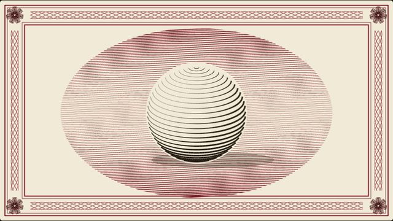
Timing
Lines are cut one after another from top to bottom over about 3 seconds, then the cross-hatching and frame. Full frame rate: an engraved line should not step.
Assets
All in code.
Sound
A fine scratch under the line work, a quiet low tone. Practice note.
What makes it read as this
Tone from line only: thin lines in the light, thick lines in the shadow
Lines follow the form: curved round a sphere, not straight across it
Cross-hatching only in the deepest shade
A guilloche frame of interwoven waves and rosettes
One or two inks: a dark brown-black and a burgundy on cream paper
What makes it look wrong
Lines of one width: the swelling is the engraving
Smooth gradients
Straight hatching that ignores the form
How to build it
Sphere: sample points with latitude, longitude and a tilt, and a brightness from a light direction (spherePoint() in looks-folk.js)
Stroke each short segment with a width of about 0.35 + 3.3 * (1 - brightness) ** 1.7
Cross-hatch: a second family of lines drawn only where brightness is under 0.4
Guilloche: six sine waves in different phases across each side, and a rose curve at each corner
Background vignette: horizontal wavy lines whose width grows toward the edge, clipped to an ellipse
Folk and print traditionsbrief2mp4 art forms
Folk and print traditions · 8 changes a second · HyperFrames (canvas)
Silkscreen poster
A poster printed in a few flat inks that overprint, each a little out of register, with coarse halftone dots for tone: flat shapes, big blocks, and colours that mix where they overlap. Screen printing, also silkscreening or serigraphy, transfers ink through a mesh onto a surface except where a stencil blocks it; traditionally the mesh was silk. It is widely used for posters and other graphics.
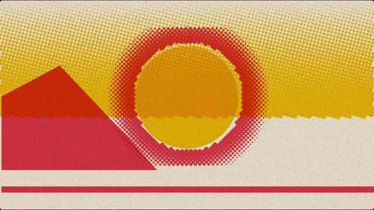
Timing
Each ink prints in turn, sliding into register over about 0.7 seconds, one every second. The picture steps about 8 times a second and each step re-seeds the misregistration.
Assets
All in code.
Sound
A press clunk and a squeegee sweep as each ink lands, an upbeat drum loop. Practice note.
What makes it read as this
Two to four flat inks, never more
Inks overprint with multiply, so overlaps make new colours
Each ink is a little off register, differently on each drawing
Halftone dots at an angle for gradients and glows
Bold flat shapes and block bars where type would go
Paper grain showing through
What makes it look wrong
Perfect register and soft gradients: that reads as digital
Too many colours
Transparency that does not multiply
How to build it
One draw function per ink, drawn with globalCompositeOperation = 'multiply' (inkLayer() in looks-folk.js)
Offset each layer by a few pixels plus a seeded jitter keyed to frameOf(t, 8)
Halftone: a rotated grid of dots whose radius is pitch * 0.72 * sqrt(value) (halftone())
Slide each layer in from off-register and settle it at its offset
Folk and print traditions · smooth · HyperFrames (canvas or SVG)
Art deco
Gold lines, sunbursts and stepped, symmetric geometry on a deep ground: fans and arcs, a tower in steps, zigzag borders and small stars, in gold on navy and burgundy. Art Deco first appeared in Paris in the 1910s, just before the First World War, and flourished internationally in the 1920s and early 1930s; the name came into use after the 1925 Paris exhibition of decorative and industrial arts. It has its origin in the bold geometric forms of the Vienna Secession and Cubism, and in New York the Empire State and Chrysler Buildings are monuments to the style.
Timing
Rays and arcs grow out from the centre over about 3 seconds, then the tower rises in steps. Smooth, full frame rate, with a slow twinkle.
Assets
All in code.
Sound
Brass and muted trumpet, a swing bed. Practice note.
What makes it read as this
Strict symmetry about a vertical axis
Gold or light-gold lines on a deep ground: black, navy, burgundy or emerald
Sunburst rays, fans and concentric arcs
Stepped shapes: towers and frames in steps
Zigzag borders, chevrons and small star sparkles
What makes it look wrong
Asymmetry
Soft gradients and rounded shapes
Using teal or mint: this skill leaves them out
How to build it
Sunburst: wedges that alternate fill and ground, each edge a gold line drawn to a growing radius
Arcs: ctx.arc from pi to a growing angle at several radii
Tower: nested rectangles of falling width, each rising in turn
Mirror the side decoration with ctx.scale(-1, 1) so it is exactly symmetric
Sparkles: eight-point stars whose size follows a sine of time
Folk and print traditionsbrief2mp4 art forms
Folk and print traditions · smooth · HyperFrames (canvas)
Stained glass
Coloured panes held by thick dark lead lines in an arched window: a rose at the top, a diamond lattice below, and light glowing through each pane. Stained glass is glass coloured by adding metallic salts during its manufacture, arranged into windows of small pieces held together, traditionally, by strips of lead called cames. In Western Europe, together with illuminated manuscripts, such windows are a major form of medieval visual art that has survived.
Timing
The panes light up from the centre outward over about 2 seconds, then a soft beam of sun crosses the glass slowly. Smooth, full frame rate.
Assets
All in code.
Sound
A choir pad, a long reverb, footsteps in a stone room. Practice note.
Each pane glows brighter at its centre, as light passes through
A pointed or round arch, with a rose and a lattice
A dark stone wall round it, so the glass is the light source
What makes it look wrong
Thin lead lines: they are part of the picture
Flat panes with no glow
Washed-out pastel colours: keep them saturated
How to build it
Build each pane as a polygon; fill dark, then fill with its colour as it is lit, plus a radial glow with lighter
Rose: annular sectors in three rings (ring() in the demo); lattice: a grid of diamonds clipped to the arch
Stroke every pane with a 6 px dark line, lineJoin = 'round'
The beam: a linear gradient band drawn with lighter, its position a function of time
Wall: dark base colour and a block pattern
Folk and print traditions · 8 changes a second · HyperFrames (canvas or SVG)
Ukiyo-e woodblock
A Japanese woodblock print: flat areas of colour, fine ink outlines, a great curling wave of deep blue with claw-like fingers of foam, a pale banded sky, a small distant mountain and a red seal. Ukiyo-e is a genre of Japanese art that flourished from the 17th through 19th centuries, with woodblock prints and paintings; the term means "pictures of the floating world". By the 1740s artists were using several blocks to print areas of colour, and Hokusai's The Great Wave off Kanagawa is one of the best-known works of Japanese art.
Sourcing note: Wikipedia's ukiyo-e article does not describe Prussian blue, wave contour lines or claw-like foam; those rules are a practice summary from looking at the genre, not sourced facts.
Timing
The wave rises and the foam fingers grow over about 2 seconds; the sea and boats bob gently. The picture steps about 8 times a second.
Assets
All in code. Public-domain scans of historic prints are a better source for real prints; check the museum's terms.
Sound
A shamisen and a taiko, the sound of surf. Practice note.
What makes it read as this
Flat colour areas, no gradients except a soft band at the top of the sky
Fine ink outlines round every shape
A deep Prussian-style blue for water, with darker contour lines that follow the wave
Foam as claw-like white fingers curling from the crest, with a few spray dots
A small mountain far away, a red seal, a thin border, paper grain
What makes it look wrong
Smooth shading and gradients on the water
Thick or uneven outlines: the lines are fine
Copying an existing print: the demo is an original study
How to build it
Wave: a closed spline through hand-placed points (closed()), filled and outlined
Contour lines: scale the same outline about its centre several times and clip them to the wave
Foam fingers: tapering bands along short curves (ribbon()), one per crest point, growing in turn
Sea: a polyline whose height follows a sine of stepped time
Add paper grain with speckle()
Screens and cinemabrief2mp4 art forms
Screens and cinema
Looks of screens and of cinema: neon, phosphor, tape, film and the camera that sees heat.
Screens and cinema · smooth · HyperFrames (canvas or Three.js)
Synthwave and outrun
A neon night in magenta and cyan on deep purple: a striped sun sinking behind wireframe mountains, and a glowing grid floor that streams toward the horizon. Synthwave, also called retrowave or futuresynth, is an electronic music microgenre based mainly on the music of action, science-fiction and horror film soundtracks of the 1970s and 1980s, and drawing on the decade's art and video games; it developed in the mid-to-late 2000s.
Sourcing note: The source describes the music genre; the neon grid and striped sun are the visual conventions that go with it, described here as practice.
Timing
The grid rows stream toward the camera continuously and the sun's slits creep down; smooth, full frame rate.
Assets
All in code.
Sound
A pulsing analogue synth bass, gated reverb drums and an arpeggio. Practice note.
What makes it read as this
A deep purple sky graded to hot pink at the horizon
A big sun with horizontal slits, in yellow to orange to magenta
A neon grid floor: lines that converge to a vanishing point and rows that bunch toward the horizon
Wireframe mountains outlined in cyan
Glow on every line, a bright horizon line, and a field of stars
What makes it look wrong
Mint or teal in place of cyan
A flat, unlit grid with no glow
Rows that do not bunch toward the horizon
How to build it
Floor rows: y = horizon + (H - horizon) * ((k + phase) / n) ** 2.3, with phase from time so the rows flow; columns are straight lines from the vanishing point
Glow: stroke twice with shadowBlur, a wide coloured pass and a thin white core (neon() in looks-screen.js)
Sun: a clipped disc with a vertical gradient and bars of the sky colour whose thickness grows toward the bottom
Use magenta and cyan only for lines: no mint
Screens and cinema · 12 changes a second · HyperFrames (canvas or Three.js)
Cyberpunk night city
A rainy night street in purple and amber: towers hung with flickering neon signs, a wet road that mirrors them, rain and ripples, and a lone figure under an umbrella. Cyberpunk is a subgenre of science fiction set in a dystopian future, characterised by a focus on "lowlife and high tech". William Gibson's 1984 novel Neuromancer helped solidify the genre, and the 1982 film Blade Runner is among its early films.
Sourcing note: Wikipedia describes the genre in fiction; the look rules (rain, wet reflections, signs) are a practice summary of how it is usually pictured.
Timing
Drawn on twos, 12 changes a second: rain falls, signs flicker and ripples spread.
Assets
All in code.
Sound
A low synth drone, rain, distant traffic and a hum from the signs. Practice note.
What makes it read as this
Night, rain and haze, in purple with amber windows and neon accents
Neon signs on towers: bars, arrows and rings in magenta, amber and violet, with glow
A wet road that reflects the lights, softened by a blur
Rain streaks and ripples on the ground
Signs that flicker now and then, keyed to the frame number
What makes it look wrong
Daylight or flat lighting
A dry road with no reflection
Teal and orange only: this skill leaves teal out; keep to purple, amber and magenta
How to build it
Draw the city to an off-screen canvas, then draw it again flipped below the horizon with globalAlpha 0.4 and blur() for the reflection
Signs: a stroked shape with shadowBlur, hidden on a few frames from a modulo of frameOf(t, 12)
Rain: slanted short lines with seeded positions and speeds; ripples: ellipses that grow and fade
Add a haze gradient near the horizon and a vignette
Screens and cinemabrief2mp4 art forms
Screens and cinema · 12 changes a second · HyperFrames (canvas)
ASCII art
A scene drawn only from monospaced text characters chosen by brightness: a sunrise over a sea and a headland, with waves, glitter and birds that move. ASCII art is a graphic design technique of pictures pieced together from the 95 printable characters of the ASCII standard of 1963. Among the oldest examples are works by Kenneth Knowlton from around 1966, and it was invented in large part because early printers lacked graphics ability.
Timing
The picture is recomputed 12 times a second; waves and glitter change on each step.
Assets
All in code. For video, sample frames and map their luminance.
Sound
A dial-up modem, key clicks, a slow arpeggio. Practice note.
What makes it read as this
Only characters from one monospaced font: no lines, no shapes
Brightness maps to a ramp of characters from sparse to dense: space, dot, colon, plus, hash, at-sign
A tight grid: about 120 columns and 45 rows
One or two colours on a near-black ground, brighter for denser characters
Motion comes from the character values changing, not from moving glyphs
What makes it look wrong
A proportional font: the grid breaks
Too few columns: the picture does not read
Too much contrast between neighbouring characters
How to build it
Choose a grid (cols, rows) and compute a brightness function lum(u, v, t) for each cell
Map brightness to a ramp: RAMP[Math.floor(L * (RAMP.length - 0.01))]
Draw a row as a few strings, one per brightness bucket, with spaces where another bucket has the character, so that monospace alignment holds and a row costs a few fillText calls
Scale horizontally so that the columns fill the frame
For a real image, sample a downscaled copy of it instead of the function
Screens and cinema · 12 changes a second · HyperFrames (canvas), or a Three.js post-process
1-bit dither
Two colours only, ink and paper: gradients and shaded forms turned into patterns of pure dots, in a window with a striped title bar, like an early desktop computer. Ordered dithering applies a preset threshold map tiled across an image to display a continuous image with fewer colours; with the common Bayer map it leaves noticeable crosshatch patterns. A common use of dither is converting a grayscale image to black and white so that the density of black dots approximates the grey level.
Timing
Drawn on twos, 12 changes a second.
Assets
All in code.
Sound
A beeper, a floppy-drive whirr, simple square-wave notes. Practice note.
What makes it read as this
Exactly two colours: near-black ink and warm paper white
Grey is made only from the density of dots, in a regular crosshatch pattern
Hard, unsmoothed pixels, scaled up by whole numbers
Title bars with ruled stripes and square widgets
No anti-aliasing and no half-tones
What makes it look wrong
Grey or colour anywhere
Error-diffusion noise instead of an ordered pattern
Smooth scaling that blurs the dots
How to build it
Render a small buffer (480 by 270), compute a grey L for each pixel, and set it to ink or paper by L > bayer(x, y) (bayer() in looks-screen.js)
Draw the buffer scaled by 2 with imageSmoothingEnabled = false
Draw the window chrome after the dither, in pure ink and paper with square corners
Real route: a ShaderPass that thresholds against an 8 by 8 Bayer matrix
Screens and cinemabrief2mp4 art forms
Screens and cinema · 24 changes a second · HyperFrames (canvas)
CRT terminal
An amber phosphor terminal: text typed one character at a time, a block cursor, scanlines, glow, a slow rolling bar, and a screen that bulges at the middle. A computer terminal is a device for entering data into, and displaying data from, a computer. Teleprinters were used as early hard-copy terminals and predated computer screens by decades; with inexpensive video displays terminals improved. A cathode-ray tube is the vacuum tube with a fluorescent screen that such displays used.
Sourcing note: The sources describe terminals and cathode-ray tubes; scanlines, glow and curvature are practice rules for the look.
Timing
Characters type at about 36 a second; the cursor blinks twice a second; the picture flickers each frame at 24 changes a second.
Assets
All in code. Use a monospaced font that the system has.
Sound
Key clicks and a low mains hum. Practice note.
What makes it read as this
One phosphor colour on near-black: amber or green
Text in a monospaced face with a soft glow
Scanlines: dark lines every few pixels
A screen that bulges, with darker corners and a reflection
A blinking block cursor and typed text; a faint flicker and a rolling bar
What makes it look wrong
Straight, flat screen edges
Clean text with no glow
Colour: one phosphor only
How to build it
Draw the screen to an off-screen canvas: black, glowing text with shadowBlur, scanlines, a rolling band
Curvature: copy the canvas to the main canvas in 3 px slices, each slightly narrower toward the top and bottom
Type text by slicing each line to the number of characters typed so far; place the cursor at the end of that slice
Add a vignette, a faint highlight arc and a rounded bezel mask
Screens and cinema · 24 changes a second · HyperFrames (canvas or Three.js)
Hologram HUD
A cyan and blue wireframe turning in the dark, with readouts, bars, a dial, corner brackets, a scan band and a flicker with an occasional slipped strip. A head-up display (HUD) is any transparent display that presents data without requiring users to look away from their usual viewpoints; HUDs were first developed for military aviation and are now used in commercial aircraft, cars and other applications.
Sourcing note: The source describes the real head-up display. The holographic wireframe look is a science-fiction convention, described here as practice.
Timing
The wireframe turns slowly; the numbers change about every quarter of a second; the band sweeps in about 4 seconds. Drawn at 24 changes a second.
Assets
All in code.
Sound
A soft electronic hum, data chirps and a low pulse. Practice note.
What makes it read as this
A wireframe: latitude and longitude lines, a ring and a satellite
Cyan and blue light on a near-black navy ground, with glow
HUD furniture: corner brackets, bars with numbers, a dial with ticks
A scan band sweeping down the frame and fine scanlines
Flicker, and now and then a strip that slips sideways
What makes it look wrong
Green or mint instead of cyan and blue
A solid, shaded model: it should be lines only
A steady, clean picture with no flicker
How to build it
Project points on a sphere with a turn and a tilt, and draw only the visible half
Draw each wireframe twice: a blue copy shifted 3 px, then a cyan copy, each with a glow
Bars and numbers from a hash of Math.floor(frame / 6) so that they tick
Slip: copy a thin strip of the canvas back onto itself offset by 8 px on random frames
Screens and cinemabrief2mp4 art forms
Screens and cinema · 12 changes a second · HyperFrames (canvas)
Thermal camera
A false-colour heat map through black, purple, red, orange, yellow and white: a hot head and hands, a warm mug, a cold window, a crosshair, a temperature readout and a colour scale. Infrared thermography, also called thermal imaging, is a technique in which a thermal camera detects infrared radiation from the surface of objects. Warm objects stand out against cooler backgrounds, so that variations in temperature can be seen with or without visible light.
Sourcing note: The source describes the technique; the specific palette is the common black-purple-red-yellow-white ramp, described here as practice.
Timing
The figure sways slightly and pulses; the readout changes a few times a second. Drawn at 12 changes a second.
Assets
All in code.
Sound
A soft beep on each reading and a fan hum. Practice note.
What makes it read as this
One heat value per pixel, shown through a fixed palette: black, purple, red, orange, yellow, white
Warm objects are bright and soft-edged; cold ones are dark
A hot head and hands, a warm torso, cooler limbs
A crosshair with a temperature readout and a colour scale bar
Sensor noise and fine scanlines
What makes it look wrong
Natural colours: the picture is false colour
Hard-edged shapes: heat is blurred
A palette that is not monotonic in brightness
How to build it
Draw a heat field in greys on a small canvas (240 by 135) with blur(2px); hot shapes have bright greys
Read it back with getImageData and map each grey through a 256-colour palette table
Scale the result up with smoothing, then draw the HUD in white
Add a little seeded noise to each pixel
Screens and cinema · 18 changes a second · HyperFrames (canvas), or ffmpeg filters on real footage
Silent film
Black and white at about 18 frames a second: grain, scratches, a wandering gate, flicker, an iris that opens and closes on a street scene, and an intertitle card with a framed title. A silent film is a film without synchronised recorded sound, whose plot or key lines are conveyed by intertitles when necessary. The silent era ran from the 1890s to the 1920s in most countries, and films were almost always accompanied by live music from a pianist, an organist or an orchestra.
Timing
The iris opens in 0.6 seconds, the scene plays, the iris closes at about 2.1 seconds, and the intertitle holds. Drawn at 18 changes a second.
Assets
All in code. Real footage can be graded with a black-and-white filter and given the same damage.
Sound
A piano or a small orchestra improvising, a projector whirr. Practice note.
What makes it read as this
Black and white only, with a soft vignette
A slow frame rate: about 18 changes a second
Gate weave: the frame wanders a few pixels, with now and then a jump
Flicker, grain, vertical scratches and dust specks
An iris in and out, and a framed intertitle card in a serif capital face
What makes it look wrong
Smooth 24 frames-a-second motion
A clean, steady picture
Sound effects: the era was accompanied by music
How to build it
Quantise time with frameOf(t, 18); translate the whole frame by a seeded jitter
Iris: clip to a circle whose radius grows or shrinks with easeOut and easeInOut
Film damage keyed to the frame: scratches that last two frames, dust, hairs and flicker (filmDamage() in looks-screen.js)
Intertitle: black card, a double white border and a serif title
Draw only in greys
Screens and cinemabrief2mp4 art forms
Screens and cinema · 18 changes a second · HyperFrames (canvas), or ffmpeg filters on real footage
Newsreel
Sepia footage of the 1940s: a train racing past telegraph poles, a slanted headline banner, and a damaged print with scratches, hairs, dust, a burn flash and a jolt of the frame. A newsreel is a short documentary film of news stories and items of topical interest, prevalent from the 1910s to the late 1960s and typically shown in cinemas before a feature; by the end of the 1960s television news had supplanted the format.
Timing
Drawn at 18 changes a second; the train, poles and smoke move at constant speeds, and the damage re-rolls every frame.
Assets
All in code.
Sound
A brass fanfare, a narrator's urgent cadence and a projector clatter. Practice note.
What makes it read as this
Sepia: a warm brown to cream palette, with no true black or white
A slanted, bold headline banner in a heavy condensed face
A moving subject with strong motion: a train, a parade, a ship
Film damage: scratches, hairs, dust, burns and frame jumps
A vignette and heavy grain
What makes it look wrong
Grey instead of sepia
A steady, clean picture
Presenting invented footage as a real archive: this is a style, not a document
How to build it
Build the palette with one function that maps 0..1 to a mix of dark brown and cream (sepia() in looks-screen.js)
Parallax: poles and ties move at different speeds
Banner: rotate the context by about -0.07 radians and draw a dark bar with cream text
Burn flash: a radial gradient on a random frame; jolt: a few pixels of vertical shift on a few frames
Screens and cinema · smooth · HyperFrames (canvas), or Blender for a lit 3D scene
Film noir
High-contrast black and white: a wall striped by light through venetian blinds, a man in a fedora and trench coat under a street lamp, rain slanting through the lamp's cone, and a wet pavement. Film noir is a Hollywood crime drama that emphasises cynical attitudes and motivations; the classic period is the 1940s and 1950s, with a low-key black-and-white visual style whose roots lie in German expressionist cinematography. The French critic Nino Frank first applied the term to Hollywood films in 1946.
Timing
The blind stripes drift slowly, the rain falls, smoke curls and ripples spread; smooth, full frame rate.
Assets
All in code.
Sound
A muted trumpet, a slow saxophone, rain and distant footsteps. Practice note.
What makes it read as this
Black and white with deep blacks and bright highlights
Low-key light: most of the frame in shadow
Venetian-blind stripes of light across walls and people
A figure in a hat and long coat, lit from the side
Rain, mist and smoke, lit where a lamp shines
What makes it look wrong
Mid-grey lighting: noir needs black
Colour
Stripes with no direction or drift
How to build it
Stripes: parallelograms drawn with lighter at low opacity, drifting with time
A lamp cone: a triangle with a vertical gradient; rain lines brighter inside it
Silhouette the figure first, then add rim lines on the lit edge
Add a vignette and fine grain
Screens and cinemabrief2mp4 art forms
Screens and cinema · smooth · HyperFrames (canvas or CSS transforms)
Archive documentary: pan and zoom over stills
A slow pan and zoom over still photographs laid on a desk, each with a white border and a shadow, with a lower-third caption and date that slide in for each picture, over film grain. The Ken Burns effect is a panning and zooming technique used in film and video from still images, named for the American documentarian Ken Burns. It is principally used when film or video material is not available, giving action to stills by slowly zooming in on subjects of interest and panning from one to another.
Timing
The camera moves between keyframes with easeInOut; a picture is held for 3 to 4 seconds. Smooth, full frame rate.
Assets
Use only photographs the user owns or may reuse; the pictures here are drawn shapes.
Sound
A piano, a cello, an archive-style narrator and room tone. Practice note.
What makes it read as this
A slow, eased camera: zoom in on one photograph, then pan to the next
Photographs with white borders, slight tilts and drop shadows
A lower-third caption and date that slide in for each picture
Film grain, a vignette and a dark desk
Aged photographs: sepia tones and a darkened edge
What makes it look wrong
A fast or jerky camera
No border, shadow or desk: the stills must look like objects
Presenting invented pictures as real archive
How to build it
Keyframe the camera as (time, centre x, centre y, zoom) and interpolate with easeInOut
Draw the world with translate(W / 2, H / 2), scale(zoom), translate(-cx, -cy)
Each photograph: a rotated white frame with shadowBlur, a clipped picture, and a radial darkening
Captions slide in from the left with easeOut when the camera reaches a new photograph
Real route: animate the position and scale of image layers in HyperFrames
Abstract and generativebrief2mp4 art forms
Abstract and generative
Looks made from numbers and motion: particles, fields, blobs and patterns that the code grows.
Abstract and generative · smooth · HyperFrames (canvas) or Three.js
Particles
Thousands of small glowing particles drift in from all over the frame and settle into a word, hold it, then burst apart and reform. A particle system is a technique in game physics, motion graphics and computer graphics that uses many minute sprites, 3D models or other graphic objects to simulate "fuzzy" phenomena that are hard to reproduce with conventional rendering; it was introduced in the 1982 film Star Trek II: The Wrath of Khan for the Genesis effect.
Timing
Gathering takes 2.2 seconds, the word holds with a gentle shimmer, then bursts apart over 1.6 seconds; the cycle is 6.2 seconds. Smooth, full frame rate.
Assets
All in code. Use your own icon or word: no existing logo.
Sound
A rising shimmer for the gather and a soft boom for the burst. Practice note.
What makes it read as this
Thousands of tiny points, each simple
The shape appears only from the points' positions
Glow: bright, additive points on a near-black ground
Colour from position: a gradient across the shape
Staggered motion: each particle starts and arrives at its own time
What makes it look wrong
Too few particles: the shape does not read
All particles moving in lockstep
Using a real company's logo
How to build it
Sample a target shape once: draw the word on a hidden canvas and keep the lit pixels every 4 px (wordPoints() in looks-abstract.js)
Give each particle a seeded start and a target; interpolate with a per-particle delay and easeOut
Burst: push each outward at a seeded angle with a slight curl
Draw as small squares with lighter compositing
Real route: Three.js Points with a position buffer you tween on the GPU, or a particle layer in HyperFrames
Abstract and generative · smooth · HyperFrames (canvas or WebGL shader)
Liquid metaball (blobs that merge)
Glossy liquid blobs that drift, merge and split: a smooth colour gradient from warm to violet, a bright rim, and a soft highlight on each blob. Metaballs, also known as blobby objects, are organic-looking n-dimensional isosurfaces characterised by their ability to meld together when in close proximity to create single, contiguous objects.
Timing
Seven blobs drift on sine paths; merges and splits happen as they pass. Smooth, full frame rate.
Assets
All in code.
Sound
Soft bubbling and a smooth pad. Practice note.
What makes it read as this
Round blobs that join with smooth necks and part again
A glossy surface: a bright highlight, a rim of light, and a darker side
A smooth colour gradient across the blobs, warm to violet
A dark, simple ground
Slow, floating motion on overlapping paths
What makes it look wrong
Hard-edged circles with no merging
Flat colour: the gloss is the look
Too many blobs: they turn into one mass
How to build it
Sum a field F = sum(r^2 / d^2) over a low-resolution grid (240 by 135) and treat F > 1 as inside
Smooth the edge with clamp((F - 0.92) / 0.16) and light the surface from the gradient of a saturating copy of F (tanh)
Colour: a mix across x and y; add a diffuse term, a specular term (power 40) and an environment rim
Upscale with smoothing. Real route: a fragment shader doing the same sum per pixel, or MarchingCubes in Three.js
Abstract and generativebrief2mp4 art forms
Abstract and generative · smooth · HyperFrames (canvas)
Flow-field generative
Thousands of short strokes follow a drifting noise field and gather into an orb of swirling lines, in warm and violet inks on a dark ground. Perlin noise is a type of gradient noise developed by Ken Perlin in 1983, used for procedurally generating terrain and textures. Generative art is art made in whole or in part with an autonomous system that independently determines features of the artwork.
Sourcing note: The demo uses value noise for the field, which is cheaper than Perlin noise and looks similar; the build recipe notes the swap.
Timing
About 3,400 strokes appear over 3.4 seconds, and the field drifts continuously. Smooth, full frame rate.
Assets
All in code.
Sound
An ambient drone and a slow, evolving pad. Practice note.
What makes it read as this
Many thin, semi-transparent strokes, each following the field
The field is smooth noise, so neighbouring strokes run together in streams
A form built from where the strokes start: here a disc, thinning to sparse strokes outside it
A small palette of warm and violet inks on near-black
The field drifts slowly, so the form flows
What makes it look wrong
Opaque, thick strokes: the form turns to mush
A noise field with too much high-frequency detail
Every stroke the same colour and length
How to build it
A field angle(x, y) = noise(x / 150, y / 150 + time) * 2 pi, from value noise (vnoise() in looks-painted.js); real route: Perlin or simplex noise
Each stroke: a seeded start inside a disc, then 14 steps of 5 px along the angle
Colour each from a five-ink palette with an opacity that falls toward the edge
Draw with lineCap = "round" and a width of 1 to 2.4 px
Abstract and generative · smooth · HyperFrames (canvas or WebGL shader)
Psychedelic
A 1960s concert-poster look: concentric rings warped by slow waves in a cycling run of warm, saturated colours, with black ink lines over rays that turn behind them. Psychedelic art is art, graphics or visual displays related to or inspired by psychedelic experiences; in common use it refers to the art movement of the late 1960s and early 1970s counterculture, with highly distorted or surreal visuals, bright colours and full spectrums.
Timing
The colours cycle at about 2.2 bands a second; the warps drift continuously. Smooth, full frame rate.
Assets
All in code.
Sound
A wah-guitar, a Hammond organ and a spinning-tape echo. Practice note.
What makes it read as this
Concentric rings warped by sine waves: they breathe and ripple
Saturated, warm, hot colours: orange, yellow, hot pink, violet, red
Black outline between every band
Colours that cycle through the rings over time
Rays or stripes behind the pattern, turning slowly
What makes it look wrong
Cool teal or mint colours
Thin, polite outlines or no outline
Static rings: the ripple and the colour cycle are the look
How to build it
Each ring is a closed polyline with r + A sin(5 a + t + k) + B sin(3 a - t + k) for radius; draw rings from the outside in
Colour each by a palette index offset by a time shift, cross-faded with the next entry
Outline each with a 3.4 px near-black stroke
Back layer: 36 wedges that alternate two colours and rotate slowly
Keep to warm colours: no teal and no mint
Abstract and generativebrief2mp4 art forms
Abstract and generative · 12 changes a second · HyperFrames (canvas or SVG)
Bauhaus geometric
A poster of primary-colour circles, squares and triangles with black bars on a grid of cream and black lines, where every piece jumps from cell to cell in clean steps. The Staatliches Bauhaus was a German art school, operating from 1919 to 1933, that combined crafts and the fine arts; it was founded by the architect Walter Gropius in Weimar, and became famous for an approach to design that emphasised function and tried to unify individual artistic vision with mass production.
Timing
Every piece moves to its next cell about every 0.6 seconds, the move settling in 0.3 seconds. Drawn at 12 changes a second.
Assets
All in code.
Sound
A clicking rhythm and a dry, minimal marimba. Practice note.
What makes it read as this
Primary colours only: red, yellow and blue, with black and off-white
Basic shapes: circle, square, triangle and their halves
Black bars and a visible grid
Flat fills, no gradients, no texture beyond paper
Asymmetric, balanced composition; motion in whole grid steps
What makes it look wrong
Gradients and soft shadows
Curved, ornamental decoration
Smooth sliding between positions, which loses the stepped feel
How to build it
Lay out shapes on an 80 px grid; each piece has a short route of cells that it cycles through
Step with Math.floor(time * rate) and ease the move with easeOut(fraction / 0.3)
Draw with arc, fillRect and lineTo fills and thick black outlines
Add faint grid lines and a light paper speckle
Referencebrief2mp4 art forms
Tools that exist, by name
Where
What
Used for
SVG filter
feTurbulence
noise: grain, the source for every rough edge
SVG filter
feDisplacementMap
bend a shape by that noise: cut edges, line boil, ink bleed
SVG filter
feMorphology
thicken or thin: outlines
SVG filter
feColorMatrix, feComponentTransfer
recolour, threshold, separate one ink, sepia
CSS
steps()
held drawings in a CSS animation
CSS
mix-blend-mode: multiply
ink printed over ink, paper grain over everything
CSS
mix-blend-mode: screen, plus-lighter
glow that adds up: neon, chroma bleed
CSS
image-rendering: pixelated
pixel art scaled with hard edges
Canvas
globalCompositeOperation
the same blends on a canvas, and destination-out to cut marks out of a shape
Canvas
fill("evenodd")
holes that are part of a figure: shadow puppets, lace-cut paper
Canvas
getImageData, putImageData
looks computed pixel by pixel: dither, thermal, metaballs
Canvas
filter: blur()
soft sand and metal, tilt-shift bands, reflections
GSAP
ease: "steps(n)"
held drawings in a tween
Three.js
MeshToonMaterial with a gradientMap
light in hard bands: cel shading
Three.js
a second mesh, larger, back faces only
an outline (the inverted hull); OutlineEffect packages it
post-processing for print, pixel, tape and glow looks
Three.js ships no watercolour pass and no VHS pass: both are built from the pieces above. Its GlitchPass chooses its own random timing, so check that it repeats before relying on it in a render.
When Blender is the better tool
Claymation: Use Blender when the clay needs real subsurface scattering, soft area-light shadows or sculpted detail.
Paper cut-out: Use Blender for real folded paper with thickness and light passing through it.
Felt and fabric craft: Use Blender hair or fur for real fibre fuzz on 3D figures.
Origami: Use Blender when the paper has to bend or show thickness.
Shadow puppetry: Use Blender for real light through translucent coloured leather.
Anime and cel shading: Use Blender for Freestyle line art and shader-to-RGB ramps on real characters.
Rotoscope look: Dedicated tools do true painterly rotoscoping better than a browser.
Isometric: Use Blender for bevelled, ambient-occluded isometric scenes.
Low-poly 3D: Use Blender for modelling and baked light.
3D product render: Use Blender when the brief asks for photoreal glass, caustics or depth of field.
GSAP owns the clock and the look only draws. Vendor GSAP and Three.js into the project so a render never touches the network.
Referencebrief2mp4 art forms
Sources and what was verified
What this guide rests on, and where its limits are.
Verified by running it
All 82 demos pass the browser test: each paints, changes over time and repeats exactly.
The source of the demos contains no clock, timer or unseeded random call; a test enforces it.
The router and the generated reference pages have unit tests.
Not verified
No art-form video was rendered through HyperFrames. The demos follow its rules and were tested as browser pictures.
Tested on macOS with Chrome 157 only.
Frame-rate conventions come from encyclopaedia articles, not from studio production notes.
Lines marked "practice note" in the reference pages (most sound and pacing advice, some visual rules) are working advice, not sourced facts.
Entries with a sourcing note are thinner than the rest: Felt and fabric craft, Watercolour, Motion comic, Linocut and woodcut print, 3D product render, Madhubani (Mithila), Pattachitra, Gond, Ukiyo-e woodblock, Gothic cartoon, Papercut and sanjhi (lace-cut paper), Brick toy, String puppet and kathputli, Stylised 3D cartoon, Synthwave and outrun, Cyberpunk night city, CRT terminal, Hologram HUD, Thermal camera, Sticker explainer, Flow-field generative.
The repositories studied for techniques, with their licences, are listed in the changelog entry and in the project notes. No code from another project is copied into brief2mp4 for this work. Facts were checked between 17 November 2026 and 21 November 2026.